S00-1 → S00-2 → S00-3，暴龍從遠處追到鏡頭前。M1～M5：讓每格背景不同、看得出在移動；M6：重現 ep1_v8；M7～M10：M1、M2、M4、M5 的最後一格改成 HERO 半身；M11：方法 3 改成整張平移。每一種最下面有「重現資料」，點開看參考圖和 prompt。每格 4 張，點圖放大。
| 方法 | 結果 | 一句話 |
|---|---|---|
| M1 鏡頭邊退邊拍 | 成功 | 最自然 |
| M2 鏡頭不動、越切越近 | 部分成功 | 背景有變，但不像同一台鏡頭 |
| M3 側面跟拍 | 成功 | 連戲最清楚 |
| M4 正反拍切換 | 成功 | 最有電影感 |
| M5 從空中到地面 | 部分成功 | 前兩格好，第三格沒仰拍 |
| M6 重現 ep1_v8（逐格收緊景別） | 成功 | 最好，可穩定重現 |
| M7 M1＋最後一格半身 | 成功 | 背景有接上（斷樹樁） |
| M8 M2＋最後一格半身 | 成功 | 半身效果好，但前一格是側跑 |
| M9 M4＋最後一格半身 | 成功 | 最有電影感，背景接得最好 |
| M10 M5＋最後一格半身 | 成功 | 從高空一路到臉前 |
| M11 方法 3 新版：整張平移 | 成功 | 地標是同一批像素在移動，連戲最真 |
鏡頭在 HERO 前面一路往後退。三格各用一張空景：原空景 → 往後退 10 公尺 → 再退 10 公尺。前一格的地標在下一格被甩到後面。
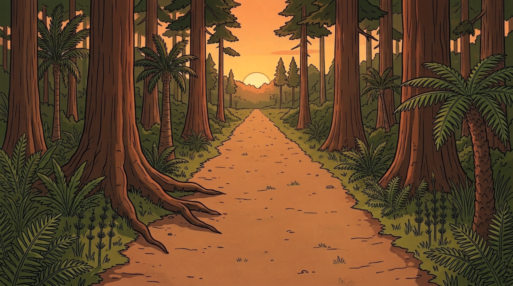
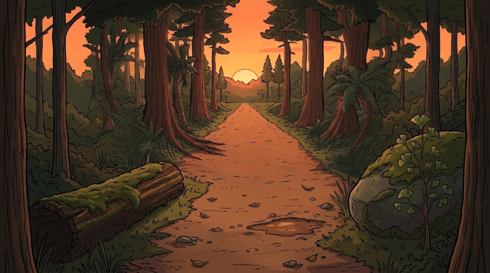
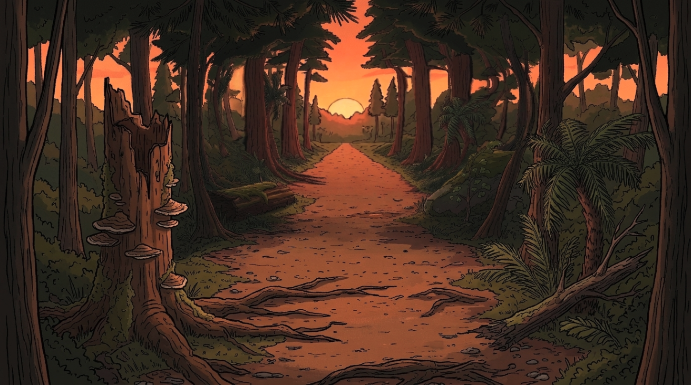
三格背景明顯不同：大樹 → 倒木和石頭 → 斷樹樁和樹根，看得出沿著同一條路跑過來。S00-3 有兩張 TEEN 跑到 HERO 旁邊並排，不在後面。
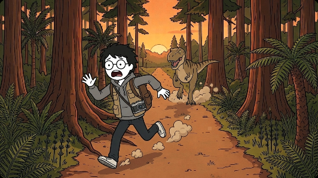
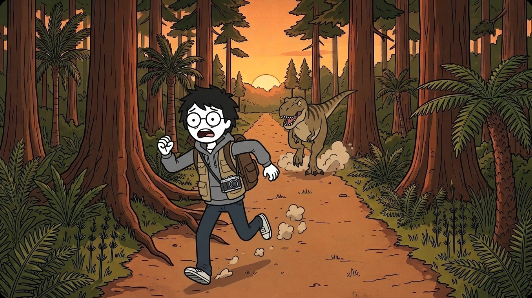
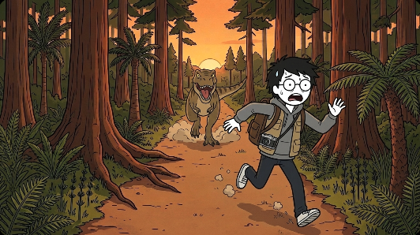
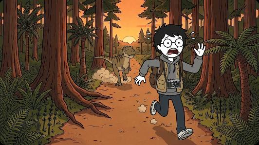
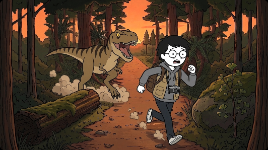
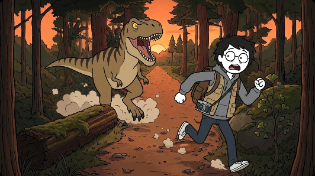
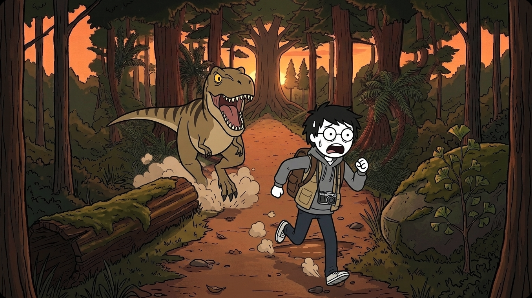
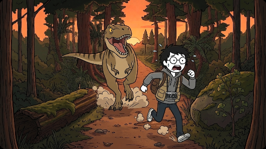
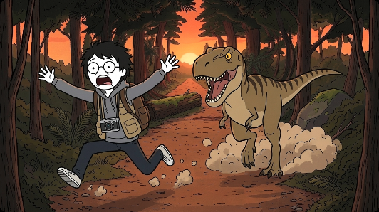
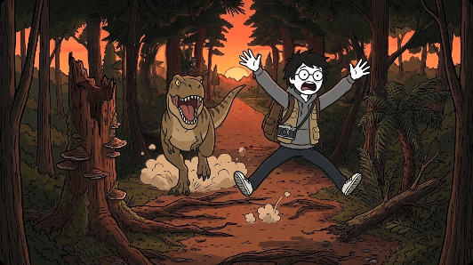
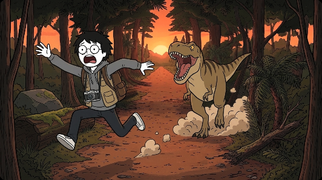
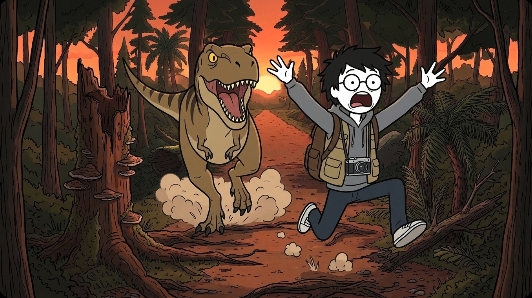
S00-1 背景 BGDUSK_A 量尺版空景 A（scale_plate.py scale_A 第 2 張）在編輯畫面拿掉角色（remove_chars.py）。
S00-2 背景 BG_DOLLYB_e2.png（往後退 10 m） BGDUSK_A 算深度圖（studio_depth.py），用 HERO 腳底 10 m、TEEN 腳底 18 m、天空無限遠校正，每一點縮成 z/(z+10)、空隙塗灰（dolly.py B），上傳後編輯畫面補（back10d.py）。補邊 prompt：
"Paint over every flat grey area only: the grey border around the picture AND the grey gaps between and behind the trees, so "
"that the whole image becomes one seamless picture. The camera has moved 10 meters back along this forest trail at sunset: "
"the picture that is already there is now farther away, and the grey areas show what has newly come into view. The newly seen "
"areas look DIFFERENT from the picture that is already there: do NOT repeat its arrangement of trees. In the grey areas, put these "
"new things: on the left, close to the camera, a big fallen log lying along the side of the trail, covered in moss; on the right, "
"close to the camera, a large mossy boulder with a young ginkgo tree beside it; at the bottom, the near part of the same dirt "
"trail, wider because it is closer, with scattered fallen leaves, a few pebbles and a small muddy puddle; at the far left and far "
"right edges, only thin dark tree trunks, partly cut off by the frame; in the gaps between the existing trees, the forest that "
"was hidden behind them; at the top, the dark undersides of high branches and sunset sky. Do NOT change anything that is not "
"grey: every tree, the trail and the sun stay exactly as they are. The same sunset light comes from the far end of the trail. "
"No grey may remain. No people, no animals, no text."S00-3 背景 BG_P2_e1.png（再退 10 m） 對 P1 再算一次深度、照同樣方法縮放（chase_prep.py p2），上傳後編輯畫面補。補邊 prompt：
Paint over every flat grey area only: the grey border around the picture AND the grey gaps between and behind the trees, so that the whole image becomes one seamless picture. The camera has moved another 10 meters back along this forest trail at sunset: the picture that is already there is now farther away, and the grey areas show what has newly come into view. Do NOT repeat anything that is already in the picture: no second fallen log, no second boulder, no ginkgo, no puddle. In the grey areas, put these new things: on the left, close to the camera, a tall broken tree stump with shelf fungus on it; on the right, close to the camera, a cluster of tall tree ferns and a fallen dead branch; at the bottom, the near part of the same dirt trail, wider because it is closer, with thick tree roots crossing it and a few pebbles; at the far left and far right edges, only thin dark tree trunks, partly cut off by the frame; in the gaps between the existing trees, the forest that was hidden behind them; at the top, the dark undersides of high branches and sunset sky. Do NOT change anything that is not grey. The same sunset light comes from the far end of the trail. No grey may remain. No people, no animals, no text.
參考圖（照附圖順序）：REF_HERO、REF_TEEN、PAIR2_TEEN、REF_PROPS、BGDUSK_A
Flow 新專案（e7138fa4…），一次 4 張
Scene M1-S00-1, 16:9. Generate only 1 image. Flat 2D cartoon illustration in exactly the same style as the attached character reference sheets: thick clean black outlines, flat warm earthy colors, simple shapes, subtle paper texture. NOT realistic, NOT 3D, no extra shading, no sketchy hatching, no photographic lighting. No text, no letters, no numbers anywhere. What happens: HERO sprints along the trail straight toward the camera, arms flailing, terrified; far behind him TEEN chases him along the same trail. Background: the attached image BGDUSK_A is exactly the background of this shot, what this camera sees behind the characters. Draw the characters in front of it and keep its trees, trail, colors and light as they are. Camera: the same camera as in the background image, about 3 meters above the trail, wide-angle lens, tilted slightly down, looking along the trail toward the sunset; the characters run toward it. Light: sunset, backlit: the low sun is at the far end of the trail behind the characters. HERO runs on the trail about 10 meters from the camera, beside the huge tree with roots spreading onto the trail; TEEN is far behind him, about 30 meters from the camera. Size: the size relation between TEEN and HERO follows the attached scale chart (TEEN is 2.89 m tall, HERO 1.72 m); never shrink TEEN. TEEN is about 3.0 times as far from the camera as HERO, so on screen TEEN looks only that much smaller next to HERO than on the chart. SKIN COLOR (very important): HERO's face, neck and hands are PURE PAPER WHITE #FFFFFF exactly like on their sheets, in EVERY lighting, including orange sunset light, blue night light or dark forest: do NOT tint their skin with the scene's light color and do NOT give them a peach, beige, tan or any realistic skin tone. Both hands are the same white, simple rounded cartoon hands, no fingernails, no knuckle wrinkles. Only the background and clothes take the scene's lighting. HERO must look exactly like the attached HERO sheet: round thin black glasses (always on his face; seen whenever his face is visible), small solid black DOT eyes (never big round eyes with pupils), short messy black hair, grey hoodie under an oversized khaki vest. Both of his wrists are bare. He wears his brown backpack on his back (as on the HERO sheet), straps over both shoulders. He has LOST his pith helmet: no helmet, his messy black hair is showing. TEEN must look exactly like the attached TEEN sheet: a teenage T. rex with the big deep boxy T. rex head, tiny arms and very long legs, tan-brown with bold dark stripes, big yellow eyes. NOT a raptor. A boxy silver-and-black compact camera hangs on a strap across HERO's chest, exactly like on the attached PROPS sheet. Vegetation: a Late Cretaceous forest, mainly tall conifers (sequoia and swamp cypress) with palm-like cycads, tree ferns, ferns and horsetails, and only a few broadleaf trees. Nothing that looks like a modern oak, maple or birch forest, no lawn grass. DUST (scaled to weight and speed, a small secondary detail that never hides or upstages the characters): HERO's running feet kick up small puffs of dust at ankle height. TEEN's heavy feet kick up thicker puffs of dust up to a human's knee. Anatomy check: every dinosaur has exactly ONE tail (when it faces the camera head-on the tail is mostly hidden behind its body), the correct number of legs and arms, and appears only once. The ONLY characters in this picture are HERO and TEEN: no other people, dinosaurs or animals anywhere. Each character appears only once.
參考圖（照附圖順序）：REF_HERO、REF_TEEN、PAIR2_TEEN、REF_PROPS、BG_DOLLYB_e2.png
Flow 新專案（e7138fa4…），一次 4 張
Scene M1-S00-2, 16:9. Generate only 1 image. Flat 2D cartoon illustration in exactly the same style as the attached character reference sheets: thick clean black outlines, flat warm earthy colors, simple shapes, subtle paper texture. NOT realistic, NOT 3D, no extra shading, no sketchy hatching, no photographic lighting. No text, no letters, no numbers anywhere. What happens: TEEN has almost caught up: it runs right behind HERO with its huge jaws wide open; HERO sprints, looking back over his shoulder in panic. Background: the attached image BG_DOLLYB_e2.png is exactly the background of this shot, what this camera sees behind the characters. Draw the characters in front of it and keep its trees, trail, colors and light as they are. Camera: the same camera as in the background image, about 3 meters above the trail, wide-angle lens, tilted slightly down, looking along the trail toward the sunset; the characters run toward it. Light: sunset, backlit: the low sun is at the far end of the trail behind the characters. The camera has moved back along the trail, staying ahead of HERO: the huge tree with spreading roots is now far behind the characters. HERO runs between the mossy fallen log and the mossy boulder, about 6 meters from the camera; TEEN is right behind him, about 9 meters from the camera. Size: the size relation between TEEN and HERO follows the attached scale chart (TEEN is 2.89 m tall, HERO 1.72 m); never shrink TEEN. TEEN is about 1.5 times as far from the camera as HERO, so on screen TEEN looks only that much smaller next to HERO than on the chart. SKIN COLOR (very important): HERO's face, neck and hands are PURE PAPER WHITE #FFFFFF exactly like on their sheets, in EVERY lighting, including orange sunset light, blue night light or dark forest: do NOT tint their skin with the scene's light color and do NOT give them a peach, beige, tan or any realistic skin tone. Both hands are the same white, simple rounded cartoon hands, no fingernails, no knuckle wrinkles. Only the background and clothes take the scene's lighting. HERO must look exactly like the attached HERO sheet: round thin black glasses (always on his face; seen whenever his face is visible), small solid black DOT eyes (never big round eyes with pupils), short messy black hair, grey hoodie under an oversized khaki vest. Both of his wrists are bare. He wears his brown backpack on his back (as on the HERO sheet), straps over both shoulders. He has LOST his pith helmet: no helmet, his messy black hair is showing. TEEN must look exactly like the attached TEEN sheet: a teenage T. rex with the big deep boxy T. rex head, tiny arms and very long legs, tan-brown with bold dark stripes, big yellow eyes. NOT a raptor. A boxy silver-and-black compact camera hangs on a strap across HERO's chest, exactly like on the attached PROPS sheet. Vegetation: a Late Cretaceous forest, mainly tall conifers (sequoia and swamp cypress) with palm-like cycads, tree ferns, ferns and horsetails, and only a few broadleaf trees. Nothing that looks like a modern oak, maple or birch forest, no lawn grass. DUST (scaled to weight and speed, a small secondary detail that never hides or upstages the characters): HERO's running feet kick up small puffs of dust at ankle height. TEEN's heavy feet kick up thicker puffs of dust up to a human's knee. Anatomy check: every dinosaur has exactly ONE tail (when it faces the camera head-on the tail is mostly hidden behind its body), the correct number of legs and arms, and appears only once. The ONLY characters in this picture are HERO and TEEN: no other people, dinosaurs or animals anywhere. Each character appears only once.
參考圖（照附圖順序）：REF_HERO、REF_TEEN、PAIR2_TEEN、REF_PROPS、BG_P2_e1.png
Flow 新專案（e7138fa4…），一次 4 張
Scene M1-S00-3, 16:9. Generate only 1 image. Flat 2D cartoon illustration in exactly the same style as the attached character reference sheets: thick clean black outlines, flat warm earthy colors, simple shapes, subtle paper texture. NOT realistic, NOT 3D, no extra shading, no sketchy hatching, no photographic lighting. No text, no letters, no numbers anywhere. What happens: HERO leaps forward with both arms and legs flung out, mouth wide open in a scream; TEEN lunges right behind him, jaws wide open. Background: the attached image BG_P2_e1.png is exactly the background of this shot, what this camera sees behind the characters. Draw the characters in front of it and keep its trees, trail, colors and light as they are. Camera: the same camera as in the background image, about 3 meters above the trail, wide-angle lens, tilted slightly down, looking along the trail toward the sunset; the characters run toward it. Light: sunset, backlit: the low sun is at the far end of the trail behind the characters. The camera has moved even farther back: the mossy fallen log and the boulder are now behind the characters in the distance. HERO is about 3.5 meters from the camera; TEEN is right behind him, about 6 meters from the camera. Size: the size relation between TEEN and HERO follows the attached scale chart (TEEN is 2.89 m tall, HERO 1.72 m); never shrink TEEN. TEEN is about 1.7 times as far from the camera as HERO, so on screen TEEN looks only that much smaller next to HERO than on the chart. SKIN COLOR (very important): HERO's face, neck and hands are PURE PAPER WHITE #FFFFFF exactly like on their sheets, in EVERY lighting, including orange sunset light, blue night light or dark forest: do NOT tint their skin with the scene's light color and do NOT give them a peach, beige, tan or any realistic skin tone. Both hands are the same white, simple rounded cartoon hands, no fingernails, no knuckle wrinkles. Only the background and clothes take the scene's lighting. HERO must look exactly like the attached HERO sheet: round thin black glasses (always on his face; seen whenever his face is visible), small solid black DOT eyes (never big round eyes with pupils), short messy black hair, grey hoodie under an oversized khaki vest. Both of his wrists are bare. He wears his brown backpack on his back (as on the HERO sheet), straps over both shoulders. He has LOST his pith helmet: no helmet, his messy black hair is showing. TEEN must look exactly like the attached TEEN sheet: a teenage T. rex with the big deep boxy T. rex head, tiny arms and very long legs, tan-brown with bold dark stripes, big yellow eyes. NOT a raptor. A boxy silver-and-black compact camera hangs on a strap across HERO's chest, exactly like on the attached PROPS sheet. Vegetation: a Late Cretaceous forest, mainly tall conifers (sequoia and swamp cypress) with palm-like cycads, tree ferns, ferns and horsetails, and only a few broadleaf trees. Nothing that looks like a modern oak, maple or birch forest, no lawn grass. DUST (scaled to weight and speed, a small secondary detail that never hides or upstages the characters): HERO's running feet kick up small puffs of dust at ankle height. TEEN's heavy feet kick up thicker puffs of dust up to a human's knee. Anatomy check: every dinosaur has exactly ONE tail (when it faces the camera head-on the tail is mostly hidden behind its body), the correct number of legs and arms, and appears only once. The ONLY characters in this picture are HERO and TEEN: no other people, dinosaurs or animals anywhere. Each character appears only once.
鏡頭固定在路上，角色從遠處跑近。S00-1 用整張空景；S00-2、S00-3 從空景裁出照量尺版算好的一塊（32%、64%），當成長鏡頭拉近。
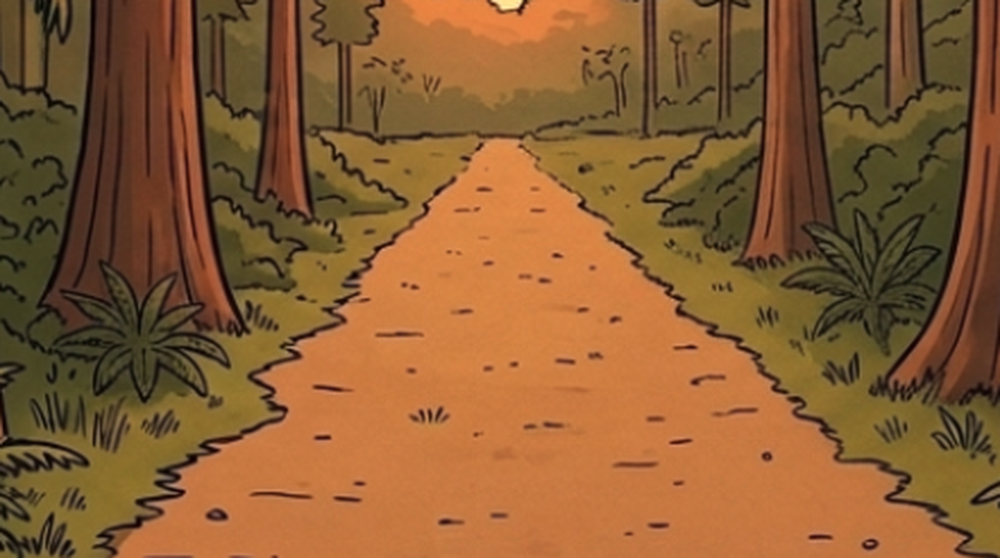
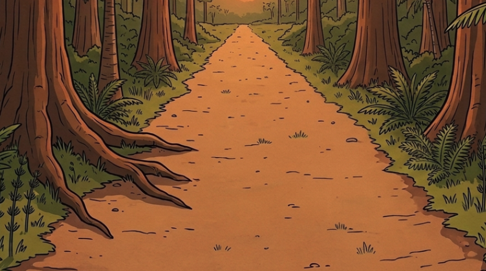
S00-1 很好：兩個小人在遠處路上。S00-2、S00-3 背景確實比較近，但兩個角色變成側身並排跑，不是朝鏡頭跑，看起來像換了機位，不像同一台鏡頭拉近。
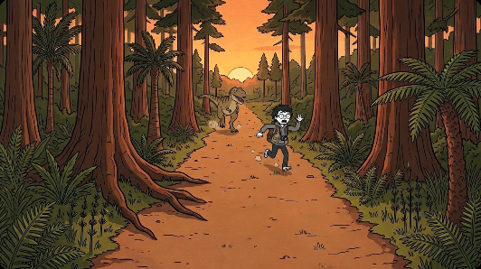
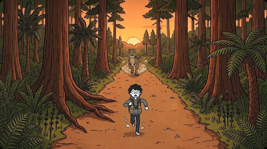
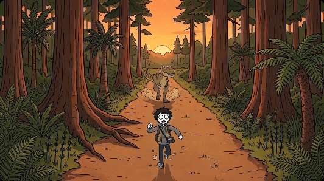
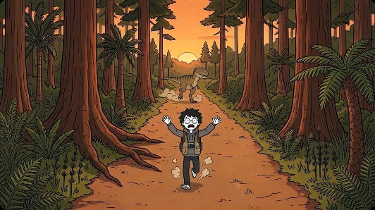
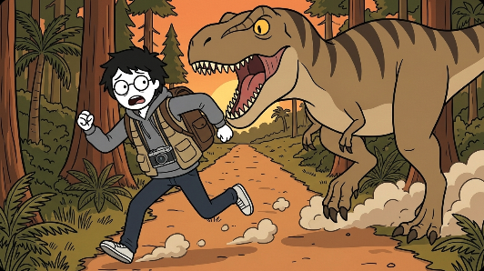
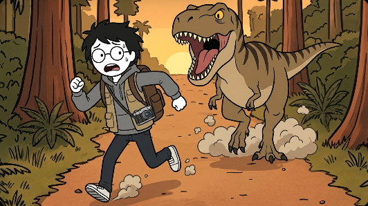
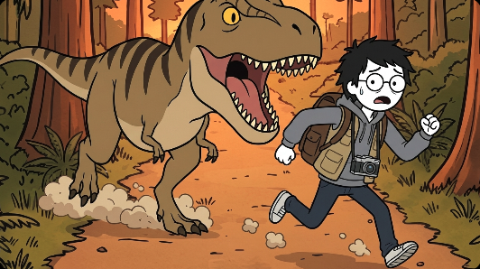
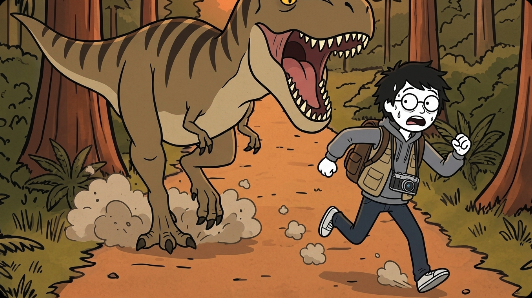
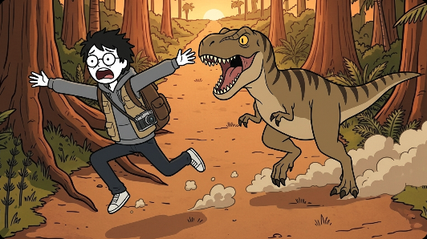
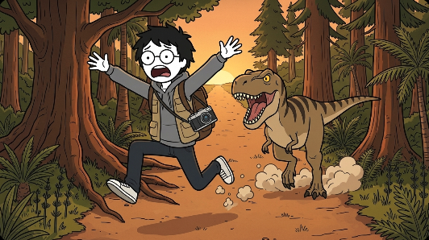
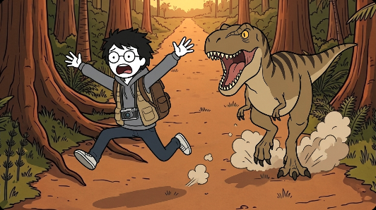
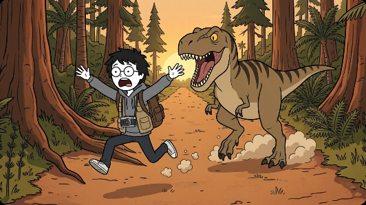
背景 S00-2、S00-3 從 BGDUSK_A 裁 32%、64%（chase_prep.py crops：照量尺版算 HERO 在 20 m、10 m 時變成全景要裁多少），上傳成 BG_FIX_S2.png、BG_FIX_S3.png。
參考圖（照附圖順序）：REF_HERO、REF_TEEN、PAIR2_TEEN、REF_PROPS、BGDUSK_A
Flow 新專案（e7138fa4…），一次 4 張
Scene M2-S00-1, 16:9. Generate only 1 image. Flat 2D cartoon illustration in exactly the same style as the attached character reference sheets: thick clean black outlines, flat warm earthy colors, simple shapes, subtle paper texture. NOT realistic, NOT 3D, no extra shading, no sketchy hatching, no photographic lighting. No text, no letters, no numbers anywhere. What happens: HERO sprints along the trail straight toward the camera, arms flailing, terrified; far behind him TEEN chases him along the same trail. Background: the attached image BGDUSK_A is exactly the background of this shot, what this camera sees behind the characters. Draw the characters in front of it and keep its trees, trail, colors and light as they are. Camera: the same camera as in the background image, about 3 meters above the trail, wide-angle lens, tilted slightly down, looking along the trail toward the sunset; the characters run toward it. Light: sunset, backlit: the low sun is at the far end of the trail behind the characters. A long shot: HERO is small and far away on the trail, about 40 meters from the camera, near the far end of the trail; TEEN is behind him, about 60 meters from the camera. Size: the size relation between TEEN and HERO follows the attached scale chart (TEEN is 2.89 m tall, HERO 1.72 m); never shrink TEEN. TEEN is about 1.5 times as far from the camera as HERO, so on screen TEEN looks only that much smaller next to HERO than on the chart. SKIN COLOR (very important): HERO's face, neck and hands are PURE PAPER WHITE #FFFFFF exactly like on their sheets, in EVERY lighting, including orange sunset light, blue night light or dark forest: do NOT tint their skin with the scene's light color and do NOT give them a peach, beige, tan or any realistic skin tone. Both hands are the same white, simple rounded cartoon hands, no fingernails, no knuckle wrinkles. Only the background and clothes take the scene's lighting. HERO must look exactly like the attached HERO sheet: round thin black glasses (always on his face; seen whenever his face is visible), small solid black DOT eyes (never big round eyes with pupils), short messy black hair, grey hoodie under an oversized khaki vest. Both of his wrists are bare. He wears his brown backpack on his back (as on the HERO sheet), straps over both shoulders. He has LOST his pith helmet: no helmet, his messy black hair is showing. TEEN must look exactly like the attached TEEN sheet: a teenage T. rex with the big deep boxy T. rex head, tiny arms and very long legs, tan-brown with bold dark stripes, big yellow eyes. NOT a raptor. A boxy silver-and-black compact camera hangs on a strap across HERO's chest, exactly like on the attached PROPS sheet. Vegetation: a Late Cretaceous forest, mainly tall conifers (sequoia and swamp cypress) with palm-like cycads, tree ferns, ferns and horsetails, and only a few broadleaf trees. Nothing that looks like a modern oak, maple or birch forest, no lawn grass. DUST (scaled to weight and speed, a small secondary detail that never hides or upstages the characters): HERO's running feet kick up small puffs of dust at ankle height. TEEN's heavy feet kick up thicker puffs of dust up to a human's knee. Anatomy check: every dinosaur has exactly ONE tail (when it faces the camera head-on the tail is mostly hidden behind its body), the correct number of legs and arms, and appears only once. The ONLY characters in this picture are HERO and TEEN: no other people, dinosaurs or animals anywhere. Each character appears only once.
參考圖（照附圖順序）：REF_HERO、REF_TEEN、PAIR2_TEEN、REF_PROPS、BG_FIX_S2.png
Flow 新專案（e7138fa4…），一次 4 張
Scene M2-S00-2, 16:9. Generate only 1 image. Flat 2D cartoon illustration in exactly the same style as the attached character reference sheets: thick clean black outlines, flat warm earthy colors, simple shapes, subtle paper texture. NOT realistic, NOT 3D, no extra shading, no sketchy hatching, no photographic lighting. No text, no letters, no numbers anywhere. What happens: TEEN has almost caught up: it runs right behind HERO with its huge jaws wide open; HERO sprints, looking back over his shoulder in panic. Background: the attached image BG_FIX_S2.png is exactly the background of this shot, what this camera sees behind the characters. Draw the characters in front of it and keep its trees, trail, colors and light as they are. Camera: a telephoto close view of the middle stretch of the trail, from far away, so the background looks flat and close. Light: sunset, backlit: the low sun is at the far end of the trail behind the characters. A full shot: HERO's whole body fills about three quarters of the picture height; TEEN is right behind him, so big that the top of its head is cut off by the top of the frame. Size: the size relation between TEEN and HERO follows the attached scale chart (TEEN is 2.89 m tall, HERO 1.72 m); never shrink TEEN. TEEN is about 1.3 times as far from the camera as HERO, so on screen TEEN looks only that much smaller next to HERO than on the chart. SKIN COLOR (very important): HERO's face, neck and hands are PURE PAPER WHITE #FFFFFF exactly like on their sheets, in EVERY lighting, including orange sunset light, blue night light or dark forest: do NOT tint their skin with the scene's light color and do NOT give them a peach, beige, tan or any realistic skin tone. Both hands are the same white, simple rounded cartoon hands, no fingernails, no knuckle wrinkles. Only the background and clothes take the scene's lighting. HERO must look exactly like the attached HERO sheet: round thin black glasses (always on his face; seen whenever his face is visible), small solid black DOT eyes (never big round eyes with pupils), short messy black hair, grey hoodie under an oversized khaki vest. Both of his wrists are bare. He wears his brown backpack on his back (as on the HERO sheet), straps over both shoulders. He has LOST his pith helmet: no helmet, his messy black hair is showing. TEEN must look exactly like the attached TEEN sheet: a teenage T. rex with the big deep boxy T. rex head, tiny arms and very long legs, tan-brown with bold dark stripes, big yellow eyes. NOT a raptor. A boxy silver-and-black compact camera hangs on a strap across HERO's chest, exactly like on the attached PROPS sheet. Vegetation: a Late Cretaceous forest, mainly tall conifers (sequoia and swamp cypress) with palm-like cycads, tree ferns, ferns and horsetails, and only a few broadleaf trees. Nothing that looks like a modern oak, maple or birch forest, no lawn grass. DUST (scaled to weight and speed, a small secondary detail that never hides or upstages the characters): HERO's running feet kick up small puffs of dust at ankle height. TEEN's heavy feet kick up thicker puffs of dust up to a human's knee. Anatomy check: every dinosaur has exactly ONE tail (when it faces the camera head-on the tail is mostly hidden behind its body), the correct number of legs and arms, and appears only once. The ONLY characters in this picture are HERO and TEEN: no other people, dinosaurs or animals anywhere. Each character appears only once.
參考圖（照附圖順序）：REF_HERO、REF_TEEN、PAIR2_TEEN、REF_PROPS、BG_FIX_S3.png
Flow 新專案（e7138fa4…），一次 4 張
Scene M2-S00-3, 16:9. Generate only 1 image. Flat 2D cartoon illustration in exactly the same style as the attached character reference sheets: thick clean black outlines, flat warm earthy colors, simple shapes, subtle paper texture. NOT realistic, NOT 3D, no extra shading, no sketchy hatching, no photographic lighting. No text, no letters, no numbers anywhere. What happens: HERO leaps forward with both arms and legs flung out, mouth wide open in a scream; TEEN lunges right behind him, jaws wide open. Background: the attached image BG_FIX_S3.png is exactly the background of this shot, what this camera sees behind the characters. Draw the characters in front of it and keep its trees, trail, colors and light as they are. Camera: a telephoto view of the near stretch of the trail beside the huge tree with spreading roots. Light: sunset, backlit: the low sun is at the far end of the trail behind the characters. A full shot: HERO's whole body fills about three quarters of the picture height, in mid-leap; TEEN is right behind him. Size: the size relation between TEEN and HERO follows the attached scale chart (TEEN is 2.89 m tall, HERO 1.72 m); never shrink TEEN. TEEN is about 1.3 times as far from the camera as HERO, so on screen TEEN looks only that much smaller next to HERO than on the chart. SKIN COLOR (very important): HERO's face, neck and hands are PURE PAPER WHITE #FFFFFF exactly like on their sheets, in EVERY lighting, including orange sunset light, blue night light or dark forest: do NOT tint their skin with the scene's light color and do NOT give them a peach, beige, tan or any realistic skin tone. Both hands are the same white, simple rounded cartoon hands, no fingernails, no knuckle wrinkles. Only the background and clothes take the scene's lighting. HERO must look exactly like the attached HERO sheet: round thin black glasses (always on his face; seen whenever his face is visible), small solid black DOT eyes (never big round eyes with pupils), short messy black hair, grey hoodie under an oversized khaki vest. Both of his wrists are bare. He wears his brown backpack on his back (as on the HERO sheet), straps over both shoulders. He has LOST his pith helmet: no helmet, his messy black hair is showing. TEEN must look exactly like the attached TEEN sheet: a teenage T. rex with the big deep boxy T. rex head, tiny arms and very long legs, tan-brown with bold dark stripes, big yellow eyes. NOT a raptor. A boxy silver-and-black compact camera hangs on a strap across HERO's chest, exactly like on the attached PROPS sheet. Vegetation: a Late Cretaceous forest, mainly tall conifers (sequoia and swamp cypress) with palm-like cycads, tree ferns, ferns and horsetails, and only a few broadleaf trees. Nothing that looks like a modern oak, maple or birch forest, no lawn grass. DUST (scaled to weight and speed, a small secondary detail that never hides or upstages the characters): HERO's running feet kick up small puffs of dust at ankle height. TEEN's heavy feet kick up thicker puffs of dust up to a human's knee. Anatomy check: every dinosaur has exactly ONE tail (when it faces the camera head-on the tail is mostly hidden behind its body), the correct number of legs and arms, and appears only once. The ONLY characters in this picture are HERO and TEEN: no other people, dinosaurs or animals anywhere. Each character appears only once.
鏡頭在路邊跟著跑、看側面。不附特別的背景，用連戲清單寫每格身後是哪一段森林：蘇鐵和夕陽 → 那棵根部攤開的大樹 → 蕨類和粗樹幹（大樹退到右邊）。
S00-2 四張都是那棵大樹在正後方，S00-3 大樹被甩到畫面右邊，跑過去的感覺很明顯。缺點：三格都是側面，從遠到近的感覺比較弱，主要是「一路往前」。
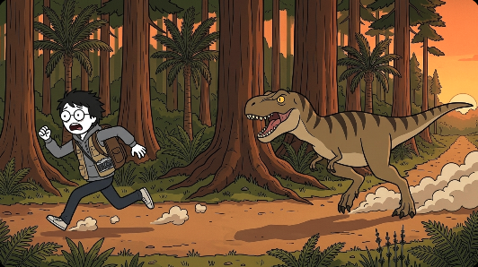
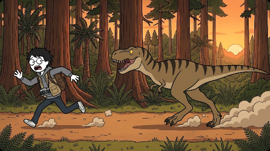
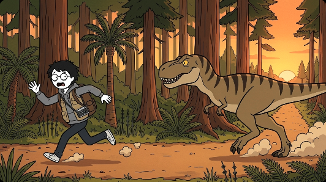
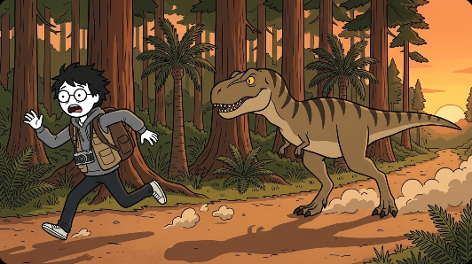
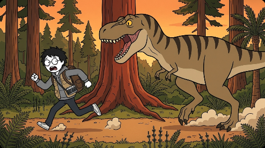
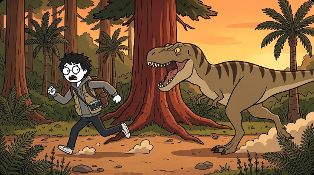
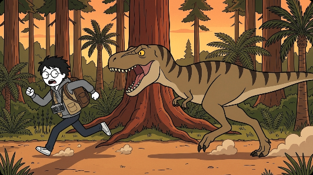
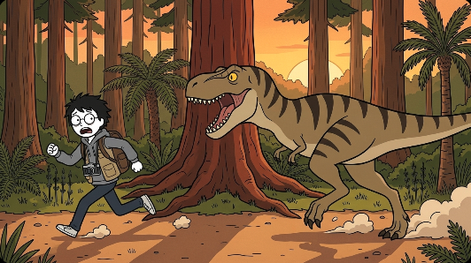
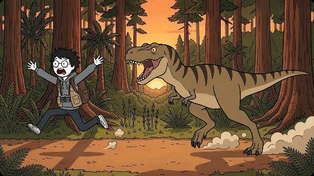
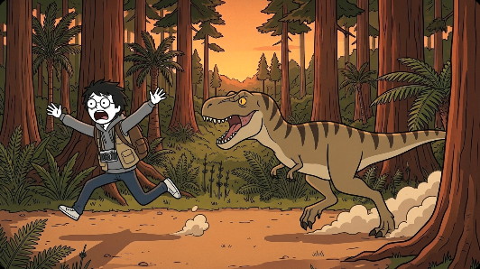
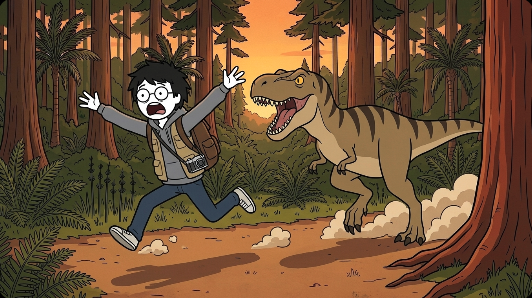
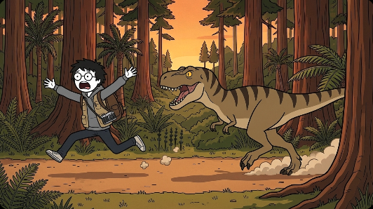
參考圖（照附圖順序）：REF_HERO、REF_TEEN、PAIR2_TEEN、REF_PROPS、BGDUSK_A
Flow 新專案（e7138fa4…），一次 4 張
Scene M3-S00-1, 16:9. Generate only 1 image. Flat 2D cartoon illustration in exactly the same style as the attached character reference sheets: thick clean black outlines, flat warm earthy colors, simple shapes, subtle paper texture. NOT realistic, NOT 3D, no extra shading, no sketchy hatching, no photographic lighting. No text, no letters, no numbers anywhere. What happens: HERO sprints along the trail toward the left of the picture, arms flailing, terrified; TEEN chases him along the same trail. The place is the forest trail of the attached image BGDUSK_A, seen from the side. Camera: eye-level, on the edge of the trail, looking straight across it at the forest on the far side, moving along with the runners like a tracking shot. The trail runs left to right across the lower part of the picture. HERO and TEEN run toward the LEFT of the picture, seen from the side. Light: sunset; the low sun is off to the RIGHT of the picture, long shadows stretch to the left along the trail. A long shot: the camera is about 15 meters away from the runners. Continuity checklist for this picture: 1) behind the runners, on the far side of the trail, a slim palm-like cycad with a round crown and a tall straight conifer trunk; 2) on the right side of the picture the trail continues into the distance toward the orange glow of the low sun; 3) HERO is on the left, TEEN about 15 meters behind him on the right. Size: the size relation between TEEN and HERO follows the attached scale chart (TEEN is 2.89 m tall, HERO 1.72 m); never shrink TEEN. TEEN and HERO are about the same distance from the camera, so their sizes on screen match the chart. SKIN COLOR (very important): HERO's face, neck and hands are PURE PAPER WHITE #FFFFFF exactly like on their sheets, in EVERY lighting, including orange sunset light, blue night light or dark forest: do NOT tint their skin with the scene's light color and do NOT give them a peach, beige, tan or any realistic skin tone. Both hands are the same white, simple rounded cartoon hands, no fingernails, no knuckle wrinkles. Only the background and clothes take the scene's lighting. HERO must look exactly like the attached HERO sheet: round thin black glasses (always on his face; seen whenever his face is visible), small solid black DOT eyes (never big round eyes with pupils), short messy black hair, grey hoodie under an oversized khaki vest. Both of his wrists are bare. He wears his brown backpack on his back (as on the HERO sheet), straps over both shoulders. He has LOST his pith helmet: no helmet, his messy black hair is showing. TEEN must look exactly like the attached TEEN sheet: a teenage T. rex with the big deep boxy T. rex head, tiny arms and very long legs, tan-brown with bold dark stripes, big yellow eyes. NOT a raptor. A boxy silver-and-black compact camera hangs on a strap across HERO's chest, exactly like on the attached PROPS sheet. Vegetation: a Late Cretaceous forest, mainly tall conifers (sequoia and swamp cypress) with palm-like cycads, tree ferns, ferns and horsetails, and only a few broadleaf trees. Nothing that looks like a modern oak, maple or birch forest, no lawn grass. DUST (scaled to weight and speed, a small secondary detail that never hides or upstages the characters): HERO's running feet kick up small puffs of dust at ankle height. TEEN's heavy feet kick up thicker puffs of dust up to a human's knee. Anatomy check: every dinosaur has exactly ONE tail (when it faces the camera head-on the tail is mostly hidden behind its body), the correct number of legs and arms, and appears only once. The ONLY characters in this picture are HERO and TEEN: no other people, dinosaurs or animals anywhere. Each character appears only once.
參考圖（照附圖順序）：REF_HERO、REF_TEEN、PAIR2_TEEN、REF_PROPS、BGDUSK_A
Flow 新專案（e7138fa4…），一次 4 張
Scene M3-S00-2, 16:9. Generate only 1 image. Flat 2D cartoon illustration in exactly the same style as the attached character reference sheets: thick clean black outlines, flat warm earthy colors, simple shapes, subtle paper texture. NOT realistic, NOT 3D, no extra shading, no sketchy hatching, no photographic lighting. No text, no letters, no numbers anywhere. What happens: TEEN has almost caught up: it runs right behind HERO with its huge jaws wide open; HERO sprints, looking back over his shoulder in panic. The place is the forest trail of the attached image BGDUSK_A, seen from the side. Camera: eye-level, on the edge of the trail, looking straight across it at the forest on the far side, moving along with the runners like a tracking shot. The trail runs left to right across the lower part of the picture. HERO and TEEN run toward the LEFT of the picture, seen from the side. Light: sunset; the low sun is off to the RIGHT of the picture, long shadows stretch to the left along the trail. A full shot: the camera is about 7 meters away from the runners. Continuity checklist for this picture: 1) directly behind the runners stands the huge reddish-brown conifer whose big roots spread across the ground onto the trail; 2) the slim cycad is now at the right edge of the picture; 3) TEEN is right behind HERO, jaws open, the top of its head reaching the top of the frame. Size: the size relation between TEEN and HERO follows the attached scale chart (TEEN is 2.89 m tall, HERO 1.72 m); never shrink TEEN. TEEN and HERO are about the same distance from the camera, so their sizes on screen match the chart. SKIN COLOR (very important): HERO's face, neck and hands are PURE PAPER WHITE #FFFFFF exactly like on their sheets, in EVERY lighting, including orange sunset light, blue night light or dark forest: do NOT tint their skin with the scene's light color and do NOT give them a peach, beige, tan or any realistic skin tone. Both hands are the same white, simple rounded cartoon hands, no fingernails, no knuckle wrinkles. Only the background and clothes take the scene's lighting. HERO must look exactly like the attached HERO sheet: round thin black glasses (always on his face; seen whenever his face is visible), small solid black DOT eyes (never big round eyes with pupils), short messy black hair, grey hoodie under an oversized khaki vest. Both of his wrists are bare. He wears his brown backpack on his back (as on the HERO sheet), straps over both shoulders. He has LOST his pith helmet: no helmet, his messy black hair is showing. TEEN must look exactly like the attached TEEN sheet: a teenage T. rex with the big deep boxy T. rex head, tiny arms and very long legs, tan-brown with bold dark stripes, big yellow eyes. NOT a raptor. A boxy silver-and-black compact camera hangs on a strap across HERO's chest, exactly like on the attached PROPS sheet. Vegetation: a Late Cretaceous forest, mainly tall conifers (sequoia and swamp cypress) with palm-like cycads, tree ferns, ferns and horsetails, and only a few broadleaf trees. Nothing that looks like a modern oak, maple or birch forest, no lawn grass. DUST (scaled to weight and speed, a small secondary detail that never hides or upstages the characters): HERO's running feet kick up small puffs of dust at ankle height. TEEN's heavy feet kick up thicker puffs of dust up to a human's knee. Anatomy check: every dinosaur has exactly ONE tail (when it faces the camera head-on the tail is mostly hidden behind its body), the correct number of legs and arms, and appears only once. The ONLY characters in this picture are HERO and TEEN: no other people, dinosaurs or animals anywhere. Each character appears only once.
參考圖（照附圖順序）：REF_HERO、REF_TEEN、PAIR2_TEEN、REF_PROPS、BGDUSK_A
Flow 新專案（e7138fa4…），一次 4 張
Scene M3-S00-3, 16:9. Generate only 1 image. Flat 2D cartoon illustration in exactly the same style as the attached character reference sheets: thick clean black outlines, flat warm earthy colors, simple shapes, subtle paper texture. NOT realistic, NOT 3D, no extra shading, no sketchy hatching, no photographic lighting. No text, no letters, no numbers anywhere. What happens: HERO leaps forward with both arms and legs flung out, mouth wide open in a scream; TEEN lunges right behind him, jaws wide open. The place is the forest trail of the attached image BGDUSK_A, seen from the side. Camera: eye-level, on the edge of the trail, looking straight across it at the forest on the far side, moving along with the runners like a tracking shot. The trail runs left to right across the lower part of the picture. HERO and TEEN run toward the LEFT of the picture, seen from the side. Light: sunset; the low sun is off to the RIGHT of the picture, long shadows stretch to the left along the trail. A full shot: the camera is about 5 meters away. Continuity checklist for this picture: 1) behind the runners, tall ferns and horsetails and a thick reddish-brown conifer trunk; 2) the huge conifer with spreading roots is now at the right edge of the picture, partly cut off; 3) HERO leaps toward the left, half turning toward the camera; TEEN lunges right behind him. Size: the size relation between TEEN and HERO follows the attached scale chart (TEEN is 2.89 m tall, HERO 1.72 m); never shrink TEEN. TEEN and HERO are about the same distance from the camera, so their sizes on screen match the chart. SKIN COLOR (very important): HERO's face, neck and hands are PURE PAPER WHITE #FFFFFF exactly like on their sheets, in EVERY lighting, including orange sunset light, blue night light or dark forest: do NOT tint their skin with the scene's light color and do NOT give them a peach, beige, tan or any realistic skin tone. Both hands are the same white, simple rounded cartoon hands, no fingernails, no knuckle wrinkles. Only the background and clothes take the scene's lighting. HERO must look exactly like the attached HERO sheet: round thin black glasses (always on his face; seen whenever his face is visible), small solid black DOT eyes (never big round eyes with pupils), short messy black hair, grey hoodie under an oversized khaki vest. Both of his wrists are bare. He wears his brown backpack on his back (as on the HERO sheet), straps over both shoulders. He has LOST his pith helmet: no helmet, his messy black hair is showing. TEEN must look exactly like the attached TEEN sheet: a teenage T. rex with the big deep boxy T. rex head, tiny arms and very long legs, tan-brown with bold dark stripes, big yellow eyes. NOT a raptor. A boxy silver-and-black compact camera hangs on a strap across HERO's chest, exactly like on the attached PROPS sheet. Vegetation: a Late Cretaceous forest, mainly tall conifers (sequoia and swamp cypress) with palm-like cycads, tree ferns, ferns and horsetails, and only a few broadleaf trees. Nothing that looks like a modern oak, maple or birch forest, no lawn grass. DUST (scaled to weight and speed, a small secondary detail that never hides or upstages the characters): HERO's running feet kick up small puffs of dust at ankle height. TEEN's heavy feet kick up thicker puffs of dust up to a human's knee. Anatomy check: every dinosaur has exactly ONE tail (when it faces the camera head-on the tail is mostly hidden behind its body), the correct number of legs and arms, and appears only once. The ONLY characters in this picture are HERO and TEEN: no other people, dinosaurs or animals anywhere. Each character appears only once.
S00-1 正面遠拍；S00-2 換到 TEEN 背後往前拍，看 HERO 往前逃，前方是倒木和石頭；S00-3 切回正面近拍，背景就是倒木和石頭那段（退 10 m 的空景）。
反拍那格倒木在右、石頭在左，跟正面那格左右相反，方向是對的；S00-3 切回來，正是倒木和石頭那段。缺點：反拍有兩張天空變成藍灰色，夕陽不見了。
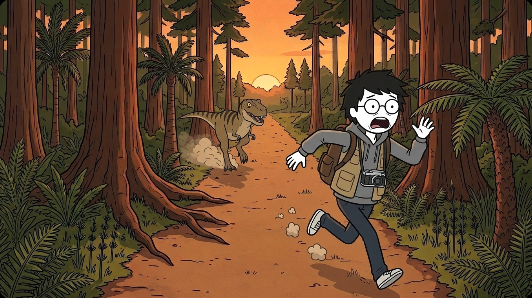
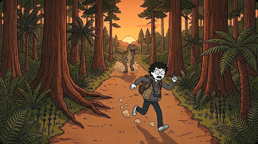
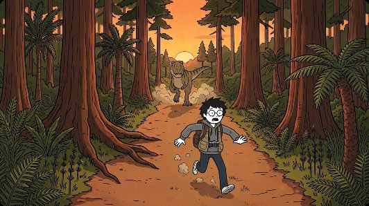
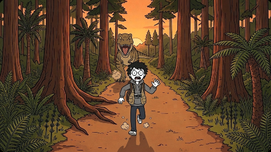
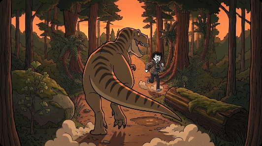
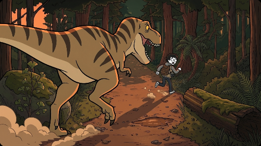
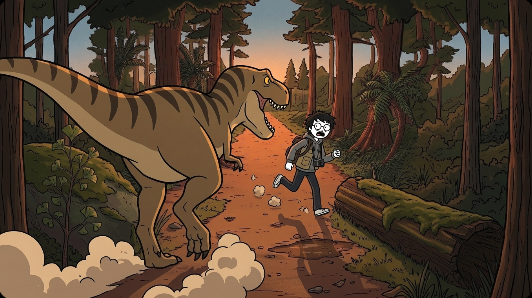
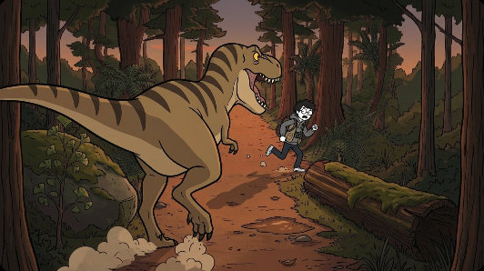
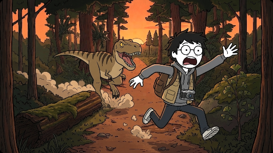
背景 S00-1 用 BGDUSK_A；S00-2（反拍）、S00-3 用 BG_DOLLYB_e2.png（做法同 M1）。
參考圖（照附圖順序）：REF_HERO、REF_TEEN、PAIR2_TEEN、REF_PROPS、BGDUSK_A
Flow 新專案（e7138fa4…），一次 4 張
Scene M4-S00-1, 16:9. Generate only 1 image. Flat 2D cartoon illustration in exactly the same style as the attached character reference sheets: thick clean black outlines, flat warm earthy colors, simple shapes, subtle paper texture. NOT realistic, NOT 3D, no extra shading, no sketchy hatching, no photographic lighting. No text, no letters, no numbers anywhere. What happens: HERO sprints along the trail straight toward the camera, arms flailing, terrified; far behind him TEEN chases him along the same trail. Background: the attached image BGDUSK_A is exactly the background of this shot, what this camera sees behind the characters. Draw the characters in front of it and keep its trees, trail, colors and light as they are. Camera: the same camera as in the background image, about 3 meters above the trail, wide-angle lens, tilted slightly down, looking along the trail toward the sunset; the characters run toward it. Light: sunset, backlit: the low sun is at the far end of the trail behind the characters. A long shot from the front: HERO runs on the trail about 15 meters from the camera; TEEN is far behind him, about 35 meters from the camera. Size: the size relation between TEEN and HERO follows the attached scale chart (TEEN is 2.89 m tall, HERO 1.72 m); never shrink TEEN. TEEN is about 2.3 times as far from the camera as HERO, so on screen TEEN looks only that much smaller next to HERO than on the chart. SKIN COLOR (very important): HERO's face, neck and hands are PURE PAPER WHITE #FFFFFF exactly like on their sheets, in EVERY lighting, including orange sunset light, blue night light or dark forest: do NOT tint their skin with the scene's light color and do NOT give them a peach, beige, tan or any realistic skin tone. Both hands are the same white, simple rounded cartoon hands, no fingernails, no knuckle wrinkles. Only the background and clothes take the scene's lighting. HERO must look exactly like the attached HERO sheet: round thin black glasses (always on his face; seen whenever his face is visible), small solid black DOT eyes (never big round eyes with pupils), short messy black hair, grey hoodie under an oversized khaki vest. Both of his wrists are bare. He wears his brown backpack on his back (as on the HERO sheet), straps over both shoulders. He has LOST his pith helmet: no helmet, his messy black hair is showing. TEEN must look exactly like the attached TEEN sheet: a teenage T. rex with the big deep boxy T. rex head, tiny arms and very long legs, tan-brown with bold dark stripes, big yellow eyes. NOT a raptor. A boxy silver-and-black compact camera hangs on a strap across HERO's chest, exactly like on the attached PROPS sheet. Vegetation: a Late Cretaceous forest, mainly tall conifers (sequoia and swamp cypress) with palm-like cycads, tree ferns, ferns and horsetails, and only a few broadleaf trees. Nothing that looks like a modern oak, maple or birch forest, no lawn grass. DUST (scaled to weight and speed, a small secondary detail that never hides or upstages the characters): HERO's running feet kick up small puffs of dust at ankle height. TEEN's heavy feet kick up thicker puffs of dust up to a human's knee. Anatomy check: every dinosaur has exactly ONE tail (when it faces the camera head-on the tail is mostly hidden behind its body), the correct number of legs and arms, and appears only once. The ONLY characters in this picture are HERO and TEEN: no other people, dinosaurs or animals anywhere. Each character appears only once.
參考圖（照附圖順序）：REF_HERO、REF_TEEN、PAIR2_TEEN、REF_PROPS、BG_DOLLYB_e2.png
Flow 新專案（e7138fa4…），一次 4 張
Scene M4-S00-2, 16:9. Generate only 1 image. Flat 2D cartoon illustration in exactly the same style as the attached character reference sheets: thick clean black outlines, flat warm earthy colors, simple shapes, subtle paper texture. NOT realistic, NOT 3D, no extra shading, no sketchy hatching, no photographic lighting. No text, no letters, no numbers anywhere. What happens: TEEN has almost caught up: it runs right behind HERO with its huge jaws wide open; HERO sprints, looking back over his shoulder in panic. Reverse angle: the camera is now BEHIND TEEN, low, close to its tail, looking the other way along the same trail, away from the sunset. We see TEEN from behind (its back, tail and legs in the foreground) chasing HERO, who runs away from the camera ahead of it. The trail ahead, where they are running, is the place in the attached image BG_DOLLYB_e2 seen from the opposite direction: a big moss-covered fallen log on the RIGHT side of the trail and a large mossy boulder with a young ginkgo tree on the LEFT side, a small muddy puddle on the trail between them. Light: sunset; the sun is behind the camera, so warm orange light falls on the characters' backs and long shadows stretch ahead of them along the trail, away from the camera. TEEN is about 4 meters from the camera; HERO is about 8 meters from the camera. Size: the size relation between TEEN and HERO follows the attached scale chart (TEEN is 2.89 m tall, HERO 1.72 m); never shrink TEEN. HERO is about 2.0 times as far from the camera as TEEN, so on screen HERO looks only that much smaller next to TEEN than on the chart. SKIN COLOR (very important): HERO's face, neck and hands are PURE PAPER WHITE #FFFFFF exactly like on their sheets, in EVERY lighting, including orange sunset light, blue night light or dark forest: do NOT tint their skin with the scene's light color and do NOT give them a peach, beige, tan or any realistic skin tone. Both hands are the same white, simple rounded cartoon hands, no fingernails, no knuckle wrinkles. Only the background and clothes take the scene's lighting. HERO must look exactly like the attached HERO sheet: round thin black glasses (always on his face; seen whenever his face is visible), small solid black DOT eyes (never big round eyes with pupils), short messy black hair, grey hoodie under an oversized khaki vest. Both of his wrists are bare. He wears his brown backpack on his back (as on the HERO sheet), straps over both shoulders. He has LOST his pith helmet: no helmet, his messy black hair is showing. TEEN must look exactly like the attached TEEN sheet: a teenage T. rex with the big deep boxy T. rex head, tiny arms and very long legs, tan-brown with bold dark stripes, big yellow eyes. NOT a raptor. A boxy silver-and-black compact camera hangs on a strap across HERO's chest, exactly like on the attached PROPS sheet. Vegetation: a Late Cretaceous forest, mainly tall conifers (sequoia and swamp cypress) with palm-like cycads, tree ferns, ferns and horsetails, and only a few broadleaf trees. Nothing that looks like a modern oak, maple or birch forest, no lawn grass. DUST (scaled to weight and speed, a small secondary detail that never hides or upstages the characters): HERO's running feet kick up small puffs of dust at ankle height. TEEN's heavy feet kick up thicker puffs of dust up to a human's knee. Anatomy check: every dinosaur has exactly ONE tail (when it faces the camera head-on the tail is mostly hidden behind its body), the correct number of legs and arms, and appears only once. The ONLY characters in this picture are HERO and TEEN: no other people, dinosaurs or animals anywhere. Each character appears only once.
參考圖（照附圖順序）：REF_HERO、REF_TEEN、PAIR2_TEEN、REF_PROPS、BG_DOLLYB_e2.png
Flow 新專案（e7138fa4…），一次 4 張
Scene M4-S00-3, 16:9. Generate only 1 image. Flat 2D cartoon illustration in exactly the same style as the attached character reference sheets: thick clean black outlines, flat warm earthy colors, simple shapes, subtle paper texture. NOT realistic, NOT 3D, no extra shading, no sketchy hatching, no photographic lighting. No text, no letters, no numbers anywhere. What happens: HERO leaps forward with both arms and legs flung out, mouth wide open in a scream; TEEN lunges right behind him, jaws wide open. Background: the attached image BG_DOLLYB_e2.png is exactly the background of this shot, what this camera sees behind the characters. Draw the characters in front of it and keep its trees, trail, colors and light as they are. Camera: the same camera as in the background image, about 3 meters above the trail, wide-angle lens, tilted slightly down, looking along the trail toward the sunset; the characters run toward it. Light: sunset, backlit: the low sun is at the far end of the trail behind the characters. Back to the front: HERO has reached the mossy fallen log and the boulder and leaps toward the camera, about 3 meters away; TEEN lunges right behind him, about 6 meters from the camera. Size: the size relation between TEEN and HERO follows the attached scale chart (TEEN is 2.89 m tall, HERO 1.72 m); never shrink TEEN. TEEN is about 2.0 times as far from the camera as HERO, so on screen TEEN looks only that much smaller next to HERO than on the chart. SKIN COLOR (very important): HERO's face, neck and hands are PURE PAPER WHITE #FFFFFF exactly like on their sheets, in EVERY lighting, including orange sunset light, blue night light or dark forest: do NOT tint their skin with the scene's light color and do NOT give them a peach, beige, tan or any realistic skin tone. Both hands are the same white, simple rounded cartoon hands, no fingernails, no knuckle wrinkles. Only the background and clothes take the scene's lighting. HERO must look exactly like the attached HERO sheet: round thin black glasses (always on his face; seen whenever his face is visible), small solid black DOT eyes (never big round eyes with pupils), short messy black hair, grey hoodie under an oversized khaki vest. Both of his wrists are bare. He wears his brown backpack on his back (as on the HERO sheet), straps over both shoulders. He has LOST his pith helmet: no helmet, his messy black hair is showing. TEEN must look exactly like the attached TEEN sheet: a teenage T. rex with the big deep boxy T. rex head, tiny arms and very long legs, tan-brown with bold dark stripes, big yellow eyes. NOT a raptor. A boxy silver-and-black compact camera hangs on a strap across HERO's chest, exactly like on the attached PROPS sheet. Vegetation: a Late Cretaceous forest, mainly tall conifers (sequoia and swamp cypress) with palm-like cycads, tree ferns, ferns and horsetails, and only a few broadleaf trees. Nothing that looks like a modern oak, maple or birch forest, no lawn grass. DUST (scaled to weight and speed, a small secondary detail that never hides or upstages the characters): HERO's running feet kick up small puffs of dust at ankle height. TEEN's heavy feet kick up thicker puffs of dust up to a human's knee. Anatomy check: every dinosaur has exactly ONE tail (when it faces the camera head-on the tail is mostly hidden behind its body), the correct number of legs and arms, and appears only once. The ONLY characters in this picture are HERO and TEEN: no other people, dinosaurs or animals anywhere. Each character appears only once.
S00-1 高空俯視的大遠景，兩個角色是路上的小點；S00-2 回到架高 3 m 的遠景；S00-3 鏡頭貼地仰拍。
S00-1 有從高處看的感覺（但不算很高）。S00-3 失敗：沒有畫成貼地往上看，還是一般的正面平視。
參考圖（照附圖順序）：REF_HERO、REF_TEEN、PAIR2_TEEN、REF_PROPS、BGDUSK_C
Flow 新專案（e7138fa4…），一次 4 張
Scene M5-S00-1, 16:9. Generate only 1 image. Flat 2D cartoon illustration in exactly the same style as the attached character reference sheets: thick clean black outlines, flat warm earthy colors, simple shapes, subtle paper texture. NOT realistic, NOT 3D, no extra shading, no sketchy hatching, no photographic lighting. No text, no letters, no numbers anywhere. What happens: HERO sprints along the trail straight toward the camera, arms flailing, terrified; far behind him TEEN chases him along the same trail. Background: the attached image BGDUSK_C is exactly the background of this shot, what this camera sees behind the characters. Draw the characters in front of it and keep its trees, trail, colors and light as they are. Camera: an extreme long shot from high above, like a drone about 40 meters up, looking down along the trail. HERO and TEEN are tiny figures running on the trail far below: HERO about 60 meters from the camera, TEEN about 75 meters, both running toward the bottom of the picture. Size: the size relation between TEEN and HERO follows the attached scale chart (TEEN is 2.89 m tall, HERO 1.72 m); never shrink TEEN. TEEN is about 1.2 times as far from the camera as HERO, so on screen TEEN looks only that much smaller next to HERO than on the chart. SKIN COLOR (very important): HERO's face, neck and hands are PURE PAPER WHITE #FFFFFF exactly like on their sheets, in EVERY lighting, including orange sunset light, blue night light or dark forest: do NOT tint their skin with the scene's light color and do NOT give them a peach, beige, tan or any realistic skin tone. Both hands are the same white, simple rounded cartoon hands, no fingernails, no knuckle wrinkles. Only the background and clothes take the scene's lighting. HERO must look exactly like the attached HERO sheet: round thin black glasses (always on his face; seen whenever his face is visible), small solid black DOT eyes (never big round eyes with pupils), short messy black hair, grey hoodie under an oversized khaki vest. Both of his wrists are bare. He wears his brown backpack on his back (as on the HERO sheet), straps over both shoulders. He has LOST his pith helmet: no helmet, his messy black hair is showing. TEEN must look exactly like the attached TEEN sheet: a teenage T. rex with the big deep boxy T. rex head, tiny arms and very long legs, tan-brown with bold dark stripes, big yellow eyes. NOT a raptor. A boxy silver-and-black compact camera hangs on a strap across HERO's chest, exactly like on the attached PROPS sheet. Vegetation: a Late Cretaceous forest, mainly tall conifers (sequoia and swamp cypress) with palm-like cycads, tree ferns, ferns and horsetails, and only a few broadleaf trees. Nothing that looks like a modern oak, maple or birch forest, no lawn grass. DUST (scaled to weight and speed, a small secondary detail that never hides or upstages the characters): HERO's running feet kick up small puffs of dust at ankle height. TEEN's heavy feet kick up thicker puffs of dust up to a human's knee. Anatomy check: every dinosaur has exactly ONE tail (when it faces the camera head-on the tail is mostly hidden behind its body), the correct number of legs and arms, and appears only once. The ONLY characters in this picture are HERO and TEEN: no other people, dinosaurs or animals anywhere. Each character appears only once.
參考圖（照附圖順序）：REF_HERO、REF_TEEN、PAIR2_TEEN、REF_PROPS、BGDUSK_A
Flow 新專案（e7138fa4…），一次 4 張
Scene M5-S00-2, 16:9. Generate only 1 image. Flat 2D cartoon illustration in exactly the same style as the attached character reference sheets: thick clean black outlines, flat warm earthy colors, simple shapes, subtle paper texture. NOT realistic, NOT 3D, no extra shading, no sketchy hatching, no photographic lighting. No text, no letters, no numbers anywhere. What happens: TEEN has almost caught up: it runs right behind HERO with its huge jaws wide open; HERO sprints, looking back over his shoulder in panic. Background: the attached image BGDUSK_A is exactly the background of this shot, what this camera sees behind the characters. Draw the characters in front of it and keep its trees, trail, colors and light as they are. Camera: the same camera as in the background image, about 3 meters above the trail, wide-angle lens, tilted slightly down, looking along the trail toward the sunset; the characters run toward it. Light: sunset, backlit: the low sun is at the far end of the trail behind the characters. HERO runs on the trail about 10 meters from the camera; TEEN is right behind him, about 16 meters from the camera, jaws open. Size: the size relation between TEEN and HERO follows the attached scale chart (TEEN is 2.89 m tall, HERO 1.72 m); never shrink TEEN. TEEN is about 1.6 times as far from the camera as HERO, so on screen TEEN looks only that much smaller next to HERO than on the chart. SKIN COLOR (very important): HERO's face, neck and hands are PURE PAPER WHITE #FFFFFF exactly like on their sheets, in EVERY lighting, including orange sunset light, blue night light or dark forest: do NOT tint their skin with the scene's light color and do NOT give them a peach, beige, tan or any realistic skin tone. Both hands are the same white, simple rounded cartoon hands, no fingernails, no knuckle wrinkles. Only the background and clothes take the scene's lighting. HERO must look exactly like the attached HERO sheet: round thin black glasses (always on his face; seen whenever his face is visible), small solid black DOT eyes (never big round eyes with pupils), short messy black hair, grey hoodie under an oversized khaki vest. Both of his wrists are bare. He wears his brown backpack on his back (as on the HERO sheet), straps over both shoulders. He has LOST his pith helmet: no helmet, his messy black hair is showing. TEEN must look exactly like the attached TEEN sheet: a teenage T. rex with the big deep boxy T. rex head, tiny arms and very long legs, tan-brown with bold dark stripes, big yellow eyes. NOT a raptor. A boxy silver-and-black compact camera hangs on a strap across HERO's chest, exactly like on the attached PROPS sheet. Vegetation: a Late Cretaceous forest, mainly tall conifers (sequoia and swamp cypress) with palm-like cycads, tree ferns, ferns and horsetails, and only a few broadleaf trees. Nothing that looks like a modern oak, maple or birch forest, no lawn grass. DUST (scaled to weight and speed, a small secondary detail that never hides or upstages the characters): HERO's running feet kick up small puffs of dust at ankle height. TEEN's heavy feet kick up thicker puffs of dust up to a human's knee. Anatomy check: every dinosaur has exactly ONE tail (when it faces the camera head-on the tail is mostly hidden behind its body), the correct number of legs and arms, and appears only once. The ONLY characters in this picture are HERO and TEEN: no other people, dinosaurs or animals anywhere. Each character appears only once.
參考圖（照附圖順序）：REF_HERO、REF_TEEN、PAIR2_TEEN、REF_PROPS、BGDUSK_A
Flow 新專案（e7138fa4…），一次 4 張
Scene M5-S00-3, 16:9. Generate only 1 image. Flat 2D cartoon illustration in exactly the same style as the attached character reference sheets: thick clean black outlines, flat warm earthy colors, simple shapes, subtle paper texture. NOT realistic, NOT 3D, no extra shading, no sketchy hatching, no photographic lighting. No text, no letters, no numbers anywhere. What happens: HERO leaps forward with both arms and legs flung out, mouth wide open in a scream; TEEN lunges right behind him, jaws wide open. The place is the forest trail of the attached image BGDUSK_A. Camera: on the ground in the middle of the trail, looking UP steeply (a worm's-eye view); the tall reddish-brown conifer trunks rise into the orange sunset sky all around the edges of the frame. HERO leaps right over the camera, seen from below, arms and legs flung out; TEEN towers behind him against the sky, jaws wide open, lunging down. Light: the low sun glows behind them. HERO is about 2 meters from the camera, TEEN about 5 meters. Size: the size relation between TEEN and HERO follows the attached scale chart (TEEN is 2.89 m tall, HERO 1.72 m); never shrink TEEN. TEEN is about 2.5 times as far from the camera as HERO, so on screen TEEN looks only that much smaller next to HERO than on the chart. SKIN COLOR (very important): HERO's face, neck and hands are PURE PAPER WHITE #FFFFFF exactly like on their sheets, in EVERY lighting, including orange sunset light, blue night light or dark forest: do NOT tint their skin with the scene's light color and do NOT give them a peach, beige, tan or any realistic skin tone. Both hands are the same white, simple rounded cartoon hands, no fingernails, no knuckle wrinkles. Only the background and clothes take the scene's lighting. HERO must look exactly like the attached HERO sheet: round thin black glasses (always on his face; seen whenever his face is visible), small solid black DOT eyes (never big round eyes with pupils), short messy black hair, grey hoodie under an oversized khaki vest. Both of his wrists are bare. He wears his brown backpack on his back (as on the HERO sheet), straps over both shoulders. He has LOST his pith helmet: no helmet, his messy black hair is showing. TEEN must look exactly like the attached TEEN sheet: a teenage T. rex with the big deep boxy T. rex head, tiny arms and very long legs, tan-brown with bold dark stripes, big yellow eyes. NOT a raptor. A boxy silver-and-black compact camera hangs on a strap across HERO's chest, exactly like on the attached PROPS sheet. Vegetation: a Late Cretaceous forest, mainly tall conifers (sequoia and swamp cypress) with palm-like cycads, tree ferns, ferns and horsetails, and only a few broadleaf trees. Nothing that looks like a modern oak, maple or birch forest, no lawn grass. DUST (scaled to weight and speed, a small secondary detail that never hides or upstages the characters): HERO's running feet kick up small puffs of dust at ankle height. TEEN's heavy feet kick up thicker puffs of dust up to a human's knee. Anatomy check: every dinosaur has exactly ONE tail (when it faces the camera head-on the tail is mostly hidden behind its body), the correct number of legs and arms, and appears only once. The ONLY characters in this picture are HERO and TEEN: no other people, dinosaurs or animals anywhere. Each character appears only once.
從 Flow 舊專案抄回 v8 當初的 prompt，在舊專案用一模一樣的 prompt 和參考圖重畫（S00-2、S00-3 附當初那張上一格）。寫法重點：每格明寫景別（全身 → 大腿以上 → 胸口以上、長鏡頭）、寫「比上一張近很多」、TEEN 張大的嘴就在 HERO 頭頂。重畫後左右翻轉成跟 v8 同方向。
每格 4 張裡約 2 張跟 v8 幾乎一樣（S00-1 第 1、4；S00-2 第 1、4；S00-3 第 3、4）。v8 不是碰運氣，是 prompt 寫對了。手環會出現，因為原 prompt 有手環那幾句，正式用時拿掉。prompt 存在 v8_S00_prompts.json。
參考圖（照附圖順序）：REF_HERO、REF_TEEN、PAIR_TEEN、REF_PROPS
Flow 舊專案（5e713a2b…）；PAIR_TEEN 是舊版比例圖；v6 S00-1／v6 S00-2 是當初選定的上一格。畫好後左右翻轉成 v8 的方向
Scene S00-1, 16:9. Generate only 1 image. Flat 2D cartoon illustration in exactly the same style as the attached character reference sheets: thick clean black outlines, flat warm earthy colors, simple shapes, subtle paper texture. NOT realistic, NOT 3D, no extra shading, no sketchy hatching, no photographic lighting. No text, no letters, no numbers anywhere. What happens: HERO sprints straight toward the camera out of a deep forest, arms flailing; far behind him TEEN chases, small in the distance. HERO has NO helmet (it was stolen earlier): his messy black hair is showing; his clothes are muddy; the camera hangs on a strap across his chest. Camera: wide shot, eye-level camera, normal lens (natural perspective). HERO (the stick-figure student) is in the center middle ground of the frame, seen from the front, facing the camera, looking toward the camera; whole body visible. The teenage T. rex is in the center background of the frame, seen from the front, facing the camera, looking toward the camera. Size: on screen, the teenage T. rex looks about 0.8 times as tall as HERO, because of its real size and its distance from the camera. Keep their real proportions exactly as on the attached scale chart of HERO next to the teenage T. rex: never shrink the dinosaur or enlarge HERO. Setting (only these, add nothing else): a forest trail in orange sunset light in the foreground, on the center and right; a dense Cretaceous forest of cycads, ginkgos and conifers behind, across the whole frame. Light: orange sunset light, backlit: the sun is in front of the camera. SKIN COLOR (very important): HERO's and PROF's face, neck and hands are PURE PAPER WHITE #FFFFFF exactly like on their sheets, in EVERY lighting, including orange sunset light, blue night light or dark forest: do NOT tint their skin with the scene's light color and do NOT give them a peach, beige, tan or any realistic skin tone. Both hands are the same white, simple rounded cartoon hands, no fingernails, no knuckle wrinkles. Only the background and clothes take the scene's lighting. HERO must look exactly like the attached HERO sheet: round thin black glasses always visible, small solid black DOT eyes (never big round eyes with pupils), short messy black hair, grey hoodie under an oversized khaki vest. On his LEFT wrist he wears the duct-taped wristband with one big red button from the attached PROPS sheet. He wears his brown backpack on his back (as on the HERO sheet), straps over both shoulders. He has LOST his pith helmet: no helmet, his messy black hair is showing. TEEN must look exactly like the attached TEEN sheet: a teenage T. rex with the big deep boxy T. rex head, tiny arms and very long legs, tan-brown with bold dark stripes, big yellow eyes. NOT a raptor. Props must match the attached PROPS sheet exactly: the boxy silver-and-black compact camera with a big round lens and a screen on the back; the clunky dark grey wristband wrapped in grey duct tape with one big red button and a tiny light. Vegetation: a Late Cretaceous forest, mainly tall conifers (sequoia and swamp cypress) with palm-like cycads, tree ferns, ferns and horsetails, and only a few broadleaf trees. Nothing that looks like a modern oak, maple or birch forest, no lawn grass. Color: sunset, orange-red sky, dusty orange haze, long dark shadows; the only cool color is the blue of the time tunnel when it is open. DUST (scaled to weight and speed, a small secondary detail that never hides or upstages the characters): HERO's running feet kick up small puffs of dust at ankle height. TEEN's heavy feet kick up thicker puffs of dust up to a human's knee. Action, not a pose: HERO is in full sprint, body leaning far forward, one foot off the ground, arms pumping, vest and hoodie flapping backward; he does NOT look at the camera. Anatomy check: every dinosaur has exactly ONE tail (when it faces the camera head-on the tail is mostly hidden behind its body), the correct number of legs and arms, and appears only once. Each character appears only once.
參考圖（照附圖順序）：REF_HERO、REF_TEEN、PAIR_TEEN、REF_PROPS、v6 S00-1
Flow 舊專案（5e713a2b…）；PAIR_TEEN 是舊版比例圖；v6 S00-1／v6 S00-2 是當初選定的上一格。畫好後左右翻轉成 v8 的方向
Scene S00-2, 16:9. Generate only 1 image. Flat 2D cartoon illustration in exactly the same style as the attached character reference sheets: thick clean black outlines, flat warm earthy colors, simple shapes, subtle paper texture. NOT realistic, NOT 3D, no extra shading, no sketchy hatching, no photographic lighting. No text, no letters, no numbers anywhere. What happens: HERO has run much closer to the camera than in the previous image and is now big in the frame, seen from the thighs up, still sprinting hard (arms pumping, body leaning forward, mouth open in panic); right behind him TEEN faces the camera head-on, jaws wide open just above his head, closing in. The stretch of path where they were in the previous image is now far behind them in the background. HERO has NO helmet (it was stolen earlier): his messy black hair is showing; his clothes are muddy; the camera hangs on a strap across his chest. Camera: medium shot (from the waist up), eye-level camera, normal lens (natural perspective). HERO (the stick-figure student) is in the center middle ground of the frame, seen from the front, facing the camera, looking toward the camera; visible from the waist up. The teenage T. rex is in the center middle ground of the frame, seen from the front, facing the camera, looking toward the camera. Size: on screen, the teenage T. rex looks about 2.0 times as tall as HERO, because of its real size and its distance from the camera. Keep their real proportions exactly as on the attached scale chart of HERO next to the teenage T. rex: never shrink the dinosaur or enlarge HERO. Setting (only these, add nothing else): a forest trail in orange sunset light behind, on the center and right; a dense Cretaceous forest of cycads, ginkgos and conifers behind, across the whole frame. Light: orange sunset light, backlit: the sun is in front of the camera. SKIN COLOR (very important): HERO's and PROF's face, neck and hands are PURE PAPER WHITE #FFFFFF exactly like on their sheets, in EVERY lighting, including orange sunset light, blue night light or dark forest: do NOT tint their skin with the scene's light color and do NOT give them a peach, beige, tan or any realistic skin tone. Both hands are the same white, simple rounded cartoon hands, no fingernails, no knuckle wrinkles. Only the background and clothes take the scene's lighting. HERO must look exactly like the attached HERO sheet: round thin black glasses always visible, small solid black DOT eyes (never big round eyes with pupils), short messy black hair, grey hoodie under an oversized khaki vest. On his LEFT wrist he wears the duct-taped wristband with one big red button from the attached PROPS sheet. He wears his brown backpack on his back (as on the HERO sheet), straps over both shoulders. He has LOST his pith helmet: no helmet, his messy black hair is showing. TEEN must look exactly like the attached TEEN sheet: a teenage T. rex with the big deep boxy T. rex head, tiny arms and very long legs, tan-brown with bold dark stripes, big yellow eyes. NOT a raptor. Props must match the attached PROPS sheet exactly: the boxy silver-and-black compact camera with a big round lens and a screen on the back; the clunky dark grey wristband wrapped in grey duct tape with one big red button and a tiny light. Vegetation: a Late Cretaceous forest, mainly tall conifers (sequoia and swamp cypress) with palm-like cycads, tree ferns, ferns and horsetails, and only a few broadleaf trees. Nothing that looks like a modern oak, maple or birch forest, no lawn grass. Color: sunset, orange-red sky, dusty orange haze, long dark shadows; the only cool color is the blue of the time tunnel when it is open. DUST (scaled to weight and speed, a small secondary detail that never hides or upstages the characters): HERO's running feet kick up small puffs of dust at ankle height. TEEN's heavy feet kick up thicker puffs of dust up to a human's knee. Action, not a pose: HERO is in full sprint, body leaning far forward, one foot off the ground, arms pumping, vest and hoodie flapping backward; he does NOT look at the camera. Anatomy check: every dinosaur has exactly ONE tail (when it faces the camera head-on the tail is mostly hidden behind its body), the correct number of legs and arms, and appears only once. Each character appears only once. Continuity: same place, same lighting and colors, and every character wears and carries exactly the same things as in the attached Scene S00-1; but use the camera position, angle and framing described in this prompt, not that image's.
參考圖（照附圖順序）：REF_HERO、REF_TEEN、PAIR_TEEN、REF_PROPS、v6 S00-2
Flow 舊專案（5e713a2b…）；PAIR_TEEN 是舊版比例圖；v6 S00-1／v6 S00-2 是當初選定的上一格。畫好後左右翻轉成 v8 的方向
Scene S00-3, 16:9. Generate only 1 image. Flat 2D cartoon illustration in exactly the same style as the attached character reference sheets: thick clean black outlines, flat warm earthy colors, simple shapes, subtle paper texture. NOT realistic, NOT 3D, no extra shading, no sketchy hatching, no photographic lighting. No text, no letters, no numbers anywhere. What happens: HERO leaps toward the camera in mid-air, arms and legs spread, panic face; TEEN's open jaws right behind him. HERO has NO helmet (it was stolen earlier): his messy black hair is showing; his clothes are muddy; the camera hangs on a strap across his chest. Camera: medium close-up (from the chest up), eye-level camera, telephoto lens (compressed background that looks close behind the subject). HERO (the stick-figure student) is in the center middle ground of the frame, seen from the front, facing the camera, looking toward the camera; visible from the chest up. The teenage T. rex is in the center middle ground of the frame, seen from the front, facing the camera, looking toward the camera. Size: on screen, the teenage T. rex looks about 2.0 times as tall as HERO, because of its real size and its distance from the camera. Keep their real proportions exactly as on the attached scale chart of HERO next to the teenage T. rex: never shrink the dinosaur or enlarge HERO. Setting (only these, add nothing else): a forest trail in orange sunset light behind, on the center and right; a dense Cretaceous forest of cycads, ginkgos and conifers behind, across the whole frame. Light: orange sunset light, backlit: the sun is in front of the camera. SKIN COLOR (very important): HERO's and PROF's face, neck and hands are PURE PAPER WHITE #FFFFFF exactly like on their sheets, in EVERY lighting, including orange sunset light, blue night light or dark forest: do NOT tint their skin with the scene's light color and do NOT give them a peach, beige, tan or any realistic skin tone. Both hands are the same white, simple rounded cartoon hands, no fingernails, no knuckle wrinkles. Only the background and clothes take the scene's lighting. HERO must look exactly like the attached HERO sheet: round thin black glasses always visible, small solid black DOT eyes (never big round eyes with pupils), short messy black hair, grey hoodie under an oversized khaki vest. On his LEFT wrist he wears the duct-taped wristband with one big red button from the attached PROPS sheet. He wears his brown backpack on his back (as on the HERO sheet), straps over both shoulders. He has LOST his pith helmet: no helmet, his messy black hair is showing. TEEN must look exactly like the attached TEEN sheet: a teenage T. rex with the big deep boxy T. rex head, tiny arms and very long legs, tan-brown with bold dark stripes, big yellow eyes. NOT a raptor. Props must match the attached PROPS sheet exactly: the boxy silver-and-black compact camera with a big round lens and a screen on the back; the clunky dark grey wristband wrapped in grey duct tape with one big red button and a tiny light. Vegetation: a Late Cretaceous forest, mainly tall conifers (sequoia and swamp cypress) with palm-like cycads, tree ferns, ferns and horsetails, and only a few broadleaf trees. Nothing that looks like a modern oak, maple or birch forest, no lawn grass. Color: sunset, orange-red sky, dusty orange haze, long dark shadows; the only cool color is the blue of the time tunnel when it is open. DUST (scaled to weight and speed, a small secondary detail that never hides or upstages the characters): HERO's running feet kick up small puffs of dust at ankle height. TEEN's heavy feet kick up thicker puffs of dust up to a human's knee. Action, not a pose: HERO is in full sprint, body leaning far forward, one foot off the ground, arms pumping, vest and hoodie flapping backward; he does NOT look at the camera. Anatomy check: every dinosaur has exactly ONE tail (when it faces the camera head-on the tail is mostly hidden behind its body), the correct number of legs and arms, and appears only once. Each character appears only once. Continuity: same place, same lighting and colors, and every character wears and carries exactly the same things as in the attached Scene S00-2; but use the camera position, angle and framing described in this prompt, not that image's. This is a CLOSE shot: frame it MUCH tighter than Scene S00-2.
M1 的 S00-1、S00-2 沿用；S00-3 重畫成 HERO 腰部以上衝到鏡頭前，長鏡頭壓縮背景，背景是「退 20 公尺」那段路。
4 張都是半身、TEEN 的嘴在頭頂，背景看得到斷樹樁，接得上 M1 的路線。第 1、4 張張力最強。
背景 S00-3 用 BG_P2_e1.png（做法同 M1）。
參考圖（照附圖順序）：REF_HERO、REF_TEEN、PAIR2_TEEN、REF_PROPS、BGDUSK_A
同 M1
Scene M1-S00-1, 16:9. Generate only 1 image. Flat 2D cartoon illustration in exactly the same style as the attached character reference sheets: thick clean black outlines, flat warm earthy colors, simple shapes, subtle paper texture. NOT realistic, NOT 3D, no extra shading, no sketchy hatching, no photographic lighting. No text, no letters, no numbers anywhere. What happens: HERO sprints along the trail straight toward the camera, arms flailing, terrified; far behind him TEEN chases him along the same trail. Background: the attached image BGDUSK_A is exactly the background of this shot, what this camera sees behind the characters. Draw the characters in front of it and keep its trees, trail, colors and light as they are. Camera: the same camera as in the background image, about 3 meters above the trail, wide-angle lens, tilted slightly down, looking along the trail toward the sunset; the characters run toward it. Light: sunset, backlit: the low sun is at the far end of the trail behind the characters. HERO runs on the trail about 10 meters from the camera, beside the huge tree with roots spreading onto the trail; TEEN is far behind him, about 30 meters from the camera. Size: the size relation between TEEN and HERO follows the attached scale chart (TEEN is 2.89 m tall, HERO 1.72 m); never shrink TEEN. TEEN is about 3.0 times as far from the camera as HERO, so on screen TEEN looks only that much smaller next to HERO than on the chart. SKIN COLOR (very important): HERO's face, neck and hands are PURE PAPER WHITE #FFFFFF exactly like on their sheets, in EVERY lighting, including orange sunset light, blue night light or dark forest: do NOT tint their skin with the scene's light color and do NOT give them a peach, beige, tan or any realistic skin tone. Both hands are the same white, simple rounded cartoon hands, no fingernails, no knuckle wrinkles. Only the background and clothes take the scene's lighting. HERO must look exactly like the attached HERO sheet: round thin black glasses (always on his face; seen whenever his face is visible), small solid black DOT eyes (never big round eyes with pupils), short messy black hair, grey hoodie under an oversized khaki vest. Both of his wrists are bare. He wears his brown backpack on his back (as on the HERO sheet), straps over both shoulders. He has LOST his pith helmet: no helmet, his messy black hair is showing. TEEN must look exactly like the attached TEEN sheet: a teenage T. rex with the big deep boxy T. rex head, tiny arms and very long legs, tan-brown with bold dark stripes, big yellow eyes. NOT a raptor. A boxy silver-and-black compact camera hangs on a strap across HERO's chest, exactly like on the attached PROPS sheet. Vegetation: a Late Cretaceous forest, mainly tall conifers (sequoia and swamp cypress) with palm-like cycads, tree ferns, ferns and horsetails, and only a few broadleaf trees. Nothing that looks like a modern oak, maple or birch forest, no lawn grass. DUST (scaled to weight and speed, a small secondary detail that never hides or upstages the characters): HERO's running feet kick up small puffs of dust at ankle height. TEEN's heavy feet kick up thicker puffs of dust up to a human's knee. Anatomy check: every dinosaur has exactly ONE tail (when it faces the camera head-on the tail is mostly hidden behind its body), the correct number of legs and arms, and appears only once. The ONLY characters in this picture are HERO and TEEN: no other people, dinosaurs or animals anywhere. Each character appears only once.
參考圖（照附圖順序）：REF_HERO、REF_TEEN、PAIR2_TEEN、REF_PROPS、BG_DOLLYB_e2.png
同 M1
Scene M1-S00-2, 16:9. Generate only 1 image. Flat 2D cartoon illustration in exactly the same style as the attached character reference sheets: thick clean black outlines, flat warm earthy colors, simple shapes, subtle paper texture. NOT realistic, NOT 3D, no extra shading, no sketchy hatching, no photographic lighting. No text, no letters, no numbers anywhere. What happens: TEEN has almost caught up: it runs right behind HERO with its huge jaws wide open; HERO sprints, looking back over his shoulder in panic. Background: the attached image BG_DOLLYB_e2.png is exactly the background of this shot, what this camera sees behind the characters. Draw the characters in front of it and keep its trees, trail, colors and light as they are. Camera: the same camera as in the background image, about 3 meters above the trail, wide-angle lens, tilted slightly down, looking along the trail toward the sunset; the characters run toward it. Light: sunset, backlit: the low sun is at the far end of the trail behind the characters. The camera has moved back along the trail, staying ahead of HERO: the huge tree with spreading roots is now far behind the characters. HERO runs between the mossy fallen log and the mossy boulder, about 6 meters from the camera; TEEN is right behind him, about 9 meters from the camera. Size: the size relation between TEEN and HERO follows the attached scale chart (TEEN is 2.89 m tall, HERO 1.72 m); never shrink TEEN. TEEN is about 1.5 times as far from the camera as HERO, so on screen TEEN looks only that much smaller next to HERO than on the chart. SKIN COLOR (very important): HERO's face, neck and hands are PURE PAPER WHITE #FFFFFF exactly like on their sheets, in EVERY lighting, including orange sunset light, blue night light or dark forest: do NOT tint their skin with the scene's light color and do NOT give them a peach, beige, tan or any realistic skin tone. Both hands are the same white, simple rounded cartoon hands, no fingernails, no knuckle wrinkles. Only the background and clothes take the scene's lighting. HERO must look exactly like the attached HERO sheet: round thin black glasses (always on his face; seen whenever his face is visible), small solid black DOT eyes (never big round eyes with pupils), short messy black hair, grey hoodie under an oversized khaki vest. Both of his wrists are bare. He wears his brown backpack on his back (as on the HERO sheet), straps over both shoulders. He has LOST his pith helmet: no helmet, his messy black hair is showing. TEEN must look exactly like the attached TEEN sheet: a teenage T. rex with the big deep boxy T. rex head, tiny arms and very long legs, tan-brown with bold dark stripes, big yellow eyes. NOT a raptor. A boxy silver-and-black compact camera hangs on a strap across HERO's chest, exactly like on the attached PROPS sheet. Vegetation: a Late Cretaceous forest, mainly tall conifers (sequoia and swamp cypress) with palm-like cycads, tree ferns, ferns and horsetails, and only a few broadleaf trees. Nothing that looks like a modern oak, maple or birch forest, no lawn grass. DUST (scaled to weight and speed, a small secondary detail that never hides or upstages the characters): HERO's running feet kick up small puffs of dust at ankle height. TEEN's heavy feet kick up thicker puffs of dust up to a human's knee. Anatomy check: every dinosaur has exactly ONE tail (when it faces the camera head-on the tail is mostly hidden behind its body), the correct number of legs and arms, and appears only once. The ONLY characters in this picture are HERO and TEEN: no other people, dinosaurs or animals anywhere. Each character appears only once.
參考圖（照附圖順序）：REF_HERO、REF_TEEN、PAIR2_TEEN、REF_PROPS、BG_P2_e1.png
Flow 新專案，一次 4 張
Scene M7-S00-3, 16:9. Generate only 1 image. Flat 2D cartoon illustration in exactly the same style as the attached character reference sheets: thick clean black outlines, flat warm earthy colors, simple shapes, subtle paper texture. NOT realistic, NOT 3D, no extra shading, no sketchy hatching, no photographic lighting. No text, no letters, no numbers anywhere. What happens: HERO has run right up to the camera and is now very close and big in the frame, leaping forward with both arms flung out, mouth wide open in a scream; TEEN lunges right behind him, facing the camera head-on, its huge open jaws just above his head. Camera: medium close-up of HERO, seen ONLY from the waist up: his legs are below the bottom edge of the frame. Eye-level camera, telephoto lens, so the background looks compressed and close behind them. HERO fills most of the frame height. TEEN's head and open jaws are above and just behind HERO's head; the rest of TEEN's body is behind him and partly cut off by the frame. Background: the place behind them is the place in the attached image BG_P2_e1.png (the dirt trail with the tall broken stump with shelf fungus and the tree ferns), seen at eye level through the telephoto lens, so only a small part of it shows, close behind them. Keep its trees, colors and light. Light: sunset, backlit: the low sun is at the far end of the trail behind the characters. Size: the size relation between TEEN and HERO follows the attached scale chart (TEEN is 2.89 m tall, HERO 1.72 m); never shrink TEEN. TEEN is about 1.8 times as far from the camera as HERO, so on screen TEEN looks only that much smaller next to HERO than on the chart. SKIN COLOR (very important): HERO's face, neck and hands are PURE PAPER WHITE #FFFFFF exactly like on their sheets, in EVERY lighting, including orange sunset light, blue night light or dark forest: do NOT tint their skin with the scene's light color and do NOT give them a peach, beige, tan or any realistic skin tone. Both hands are the same white, simple rounded cartoon hands, no fingernails, no knuckle wrinkles. Only the background and clothes take the scene's lighting. HERO must look exactly like the attached HERO sheet: round thin black glasses (always on his face; seen whenever his face is visible), small solid black DOT eyes (never big round eyes with pupils), short messy black hair, grey hoodie under an oversized khaki vest. Both of his wrists are bare. He wears his brown backpack on his back (as on the HERO sheet), straps over both shoulders. He has LOST his pith helmet: no helmet, his messy black hair is showing. TEEN must look exactly like the attached TEEN sheet: a teenage T. rex with the big deep boxy T. rex head, tiny arms and very long legs, tan-brown with bold dark stripes, big yellow eyes. NOT a raptor. A boxy silver-and-black compact camera hangs on a strap across HERO's chest, exactly like on the attached PROPS sheet. Vegetation: a Late Cretaceous forest, mainly tall conifers (sequoia and swamp cypress) with palm-like cycads, tree ferns, ferns and horsetails, and only a few broadleaf trees. Nothing that looks like a modern oak, maple or birch forest, no lawn grass. Anatomy check: every dinosaur has exactly ONE tail (when it faces the camera head-on the tail is mostly hidden behind its body), the correct number of legs and arms, and appears only once. The ONLY characters in this picture are HERO and TEEN: no other people, dinosaurs or animals anywhere. Each character appears only once.
M2 的 S00-1、S00-2 沿用；S00-3 重畫成半身，背景是裁 64% 的那塊。
S00-3 本身很好。但 M2 的 S00-2 是側身並排跑，接到正面衝過來的 S00-3 有點跳。
背景 S00-2、S00-3 從 BGDUSK_A 裁 32%、64%（chase_prep.py crops：照量尺版算 HERO 在 20 m、10 m 時變成全景要裁多少），上傳成 BG_FIX_S2.png、BG_FIX_S3.png。
參考圖（照附圖順序）：REF_HERO、REF_TEEN、PAIR2_TEEN、REF_PROPS、BGDUSK_A
同 M2
Scene M2-S00-1, 16:9. Generate only 1 image. Flat 2D cartoon illustration in exactly the same style as the attached character reference sheets: thick clean black outlines, flat warm earthy colors, simple shapes, subtle paper texture. NOT realistic, NOT 3D, no extra shading, no sketchy hatching, no photographic lighting. No text, no letters, no numbers anywhere. What happens: HERO sprints along the trail straight toward the camera, arms flailing, terrified; far behind him TEEN chases him along the same trail. Background: the attached image BGDUSK_A is exactly the background of this shot, what this camera sees behind the characters. Draw the characters in front of it and keep its trees, trail, colors and light as they are. Camera: the same camera as in the background image, about 3 meters above the trail, wide-angle lens, tilted slightly down, looking along the trail toward the sunset; the characters run toward it. Light: sunset, backlit: the low sun is at the far end of the trail behind the characters. A long shot: HERO is small and far away on the trail, about 40 meters from the camera, near the far end of the trail; TEEN is behind him, about 60 meters from the camera. Size: the size relation between TEEN and HERO follows the attached scale chart (TEEN is 2.89 m tall, HERO 1.72 m); never shrink TEEN. TEEN is about 1.5 times as far from the camera as HERO, so on screen TEEN looks only that much smaller next to HERO than on the chart. SKIN COLOR (very important): HERO's face, neck and hands are PURE PAPER WHITE #FFFFFF exactly like on their sheets, in EVERY lighting, including orange sunset light, blue night light or dark forest: do NOT tint their skin with the scene's light color and do NOT give them a peach, beige, tan or any realistic skin tone. Both hands are the same white, simple rounded cartoon hands, no fingernails, no knuckle wrinkles. Only the background and clothes take the scene's lighting. HERO must look exactly like the attached HERO sheet: round thin black glasses (always on his face; seen whenever his face is visible), small solid black DOT eyes (never big round eyes with pupils), short messy black hair, grey hoodie under an oversized khaki vest. Both of his wrists are bare. He wears his brown backpack on his back (as on the HERO sheet), straps over both shoulders. He has LOST his pith helmet: no helmet, his messy black hair is showing. TEEN must look exactly like the attached TEEN sheet: a teenage T. rex with the big deep boxy T. rex head, tiny arms and very long legs, tan-brown with bold dark stripes, big yellow eyes. NOT a raptor. A boxy silver-and-black compact camera hangs on a strap across HERO's chest, exactly like on the attached PROPS sheet. Vegetation: a Late Cretaceous forest, mainly tall conifers (sequoia and swamp cypress) with palm-like cycads, tree ferns, ferns and horsetails, and only a few broadleaf trees. Nothing that looks like a modern oak, maple or birch forest, no lawn grass. DUST (scaled to weight and speed, a small secondary detail that never hides or upstages the characters): HERO's running feet kick up small puffs of dust at ankle height. TEEN's heavy feet kick up thicker puffs of dust up to a human's knee. Anatomy check: every dinosaur has exactly ONE tail (when it faces the camera head-on the tail is mostly hidden behind its body), the correct number of legs and arms, and appears only once. The ONLY characters in this picture are HERO and TEEN: no other people, dinosaurs or animals anywhere. Each character appears only once.
參考圖（照附圖順序）：REF_HERO、REF_TEEN、PAIR2_TEEN、REF_PROPS、BG_FIX_S2.png
同 M2
Scene M2-S00-2, 16:9. Generate only 1 image. Flat 2D cartoon illustration in exactly the same style as the attached character reference sheets: thick clean black outlines, flat warm earthy colors, simple shapes, subtle paper texture. NOT realistic, NOT 3D, no extra shading, no sketchy hatching, no photographic lighting. No text, no letters, no numbers anywhere. What happens: TEEN has almost caught up: it runs right behind HERO with its huge jaws wide open; HERO sprints, looking back over his shoulder in panic. Background: the attached image BG_FIX_S2.png is exactly the background of this shot, what this camera sees behind the characters. Draw the characters in front of it and keep its trees, trail, colors and light as they are. Camera: a telephoto close view of the middle stretch of the trail, from far away, so the background looks flat and close. Light: sunset, backlit: the low sun is at the far end of the trail behind the characters. A full shot: HERO's whole body fills about three quarters of the picture height; TEEN is right behind him, so big that the top of its head is cut off by the top of the frame. Size: the size relation between TEEN and HERO follows the attached scale chart (TEEN is 2.89 m tall, HERO 1.72 m); never shrink TEEN. TEEN is about 1.3 times as far from the camera as HERO, so on screen TEEN looks only that much smaller next to HERO than on the chart. SKIN COLOR (very important): HERO's face, neck and hands are PURE PAPER WHITE #FFFFFF exactly like on their sheets, in EVERY lighting, including orange sunset light, blue night light or dark forest: do NOT tint their skin with the scene's light color and do NOT give them a peach, beige, tan or any realistic skin tone. Both hands are the same white, simple rounded cartoon hands, no fingernails, no knuckle wrinkles. Only the background and clothes take the scene's lighting. HERO must look exactly like the attached HERO sheet: round thin black glasses (always on his face; seen whenever his face is visible), small solid black DOT eyes (never big round eyes with pupils), short messy black hair, grey hoodie under an oversized khaki vest. Both of his wrists are bare. He wears his brown backpack on his back (as on the HERO sheet), straps over both shoulders. He has LOST his pith helmet: no helmet, his messy black hair is showing. TEEN must look exactly like the attached TEEN sheet: a teenage T. rex with the big deep boxy T. rex head, tiny arms and very long legs, tan-brown with bold dark stripes, big yellow eyes. NOT a raptor. A boxy silver-and-black compact camera hangs on a strap across HERO's chest, exactly like on the attached PROPS sheet. Vegetation: a Late Cretaceous forest, mainly tall conifers (sequoia and swamp cypress) with palm-like cycads, tree ferns, ferns and horsetails, and only a few broadleaf trees. Nothing that looks like a modern oak, maple or birch forest, no lawn grass. DUST (scaled to weight and speed, a small secondary detail that never hides or upstages the characters): HERO's running feet kick up small puffs of dust at ankle height. TEEN's heavy feet kick up thicker puffs of dust up to a human's knee. Anatomy check: every dinosaur has exactly ONE tail (when it faces the camera head-on the tail is mostly hidden behind its body), the correct number of legs and arms, and appears only once. The ONLY characters in this picture are HERO and TEEN: no other people, dinosaurs or animals anywhere. Each character appears only once.
參考圖（照附圖順序）：REF_HERO、REF_TEEN、PAIR2_TEEN、REF_PROPS、BG_FIX_S3.png
Flow 新專案，一次 4 張
Scene M8-S00-3, 16:9. Generate only 1 image. Flat 2D cartoon illustration in exactly the same style as the attached character reference sheets: thick clean black outlines, flat warm earthy colors, simple shapes, subtle paper texture. NOT realistic, NOT 3D, no extra shading, no sketchy hatching, no photographic lighting. No text, no letters, no numbers anywhere. What happens: HERO has run right up to the camera and is now very close and big in the frame, leaping forward with both arms flung out, mouth wide open in a scream; TEEN lunges right behind him, facing the camera head-on, its huge open jaws just above his head. Camera: medium close-up of HERO, seen ONLY from the waist up: his legs are below the bottom edge of the frame. Eye-level camera, telephoto lens, so the background looks compressed and close behind them. HERO fills most of the frame height. TEEN's head and open jaws are above and just behind HERO's head; the rest of TEEN's body is behind him and partly cut off by the frame. Background: the place behind them is the place in the attached image BG_FIX_S3.png (the near stretch of the trail beside the huge tree with spreading roots), seen at eye level through the telephoto lens, so only a small part of it shows, close behind them. Keep its trees, colors and light. Light: sunset, backlit: the low sun is at the far end of the trail behind the characters. Size: the size relation between TEEN and HERO follows the attached scale chart (TEEN is 2.89 m tall, HERO 1.72 m); never shrink TEEN. TEEN is about 1.8 times as far from the camera as HERO, so on screen TEEN looks only that much smaller next to HERO than on the chart. SKIN COLOR (very important): HERO's face, neck and hands are PURE PAPER WHITE #FFFFFF exactly like on their sheets, in EVERY lighting, including orange sunset light, blue night light or dark forest: do NOT tint their skin with the scene's light color and do NOT give them a peach, beige, tan or any realistic skin tone. Both hands are the same white, simple rounded cartoon hands, no fingernails, no knuckle wrinkles. Only the background and clothes take the scene's lighting. HERO must look exactly like the attached HERO sheet: round thin black glasses (always on his face; seen whenever his face is visible), small solid black DOT eyes (never big round eyes with pupils), short messy black hair, grey hoodie under an oversized khaki vest. Both of his wrists are bare. He wears his brown backpack on his back (as on the HERO sheet), straps over both shoulders. He has LOST his pith helmet: no helmet, his messy black hair is showing. TEEN must look exactly like the attached TEEN sheet: a teenage T. rex with the big deep boxy T. rex head, tiny arms and very long legs, tan-brown with bold dark stripes, big yellow eyes. NOT a raptor. A boxy silver-and-black compact camera hangs on a strap across HERO's chest, exactly like on the attached PROPS sheet. Vegetation: a Late Cretaceous forest, mainly tall conifers (sequoia and swamp cypress) with palm-like cycads, tree ferns, ferns and horsetails, and only a few broadleaf trees. Nothing that looks like a modern oak, maple or birch forest, no lawn grass. Anatomy check: every dinosaur has exactly ONE tail (when it faces the camera head-on the tail is mostly hidden behind its body), the correct number of legs and arms, and appears only once. The ONLY characters in this picture are HERO and TEEN: no other people, dinosaurs or animals anywhere. Each character appears only once.
M4 的 S00-1、S00-2（反拍）沿用；S00-3 重畫成半身，背景是倒木和石頭那段（退 10 m）。
反拍看到前方的倒木和石頭，下一格切回正面，HERO 就衝到倒木和石頭前面、只剩半身。4 張都成功。
背景 S00-3 用 BG_DOLLYB_e2.png（做法同 M1）。
參考圖（照附圖順序）：REF_HERO、REF_TEEN、PAIR2_TEEN、REF_PROPS、BGDUSK_A
同 M4
Scene M4-S00-1, 16:9. Generate only 1 image. Flat 2D cartoon illustration in exactly the same style as the attached character reference sheets: thick clean black outlines, flat warm earthy colors, simple shapes, subtle paper texture. NOT realistic, NOT 3D, no extra shading, no sketchy hatching, no photographic lighting. No text, no letters, no numbers anywhere. What happens: HERO sprints along the trail straight toward the camera, arms flailing, terrified; far behind him TEEN chases him along the same trail. Background: the attached image BGDUSK_A is exactly the background of this shot, what this camera sees behind the characters. Draw the characters in front of it and keep its trees, trail, colors and light as they are. Camera: the same camera as in the background image, about 3 meters above the trail, wide-angle lens, tilted slightly down, looking along the trail toward the sunset; the characters run toward it. Light: sunset, backlit: the low sun is at the far end of the trail behind the characters. A long shot from the front: HERO runs on the trail about 15 meters from the camera; TEEN is far behind him, about 35 meters from the camera. Size: the size relation between TEEN and HERO follows the attached scale chart (TEEN is 2.89 m tall, HERO 1.72 m); never shrink TEEN. TEEN is about 2.3 times as far from the camera as HERO, so on screen TEEN looks only that much smaller next to HERO than on the chart. SKIN COLOR (very important): HERO's face, neck and hands are PURE PAPER WHITE #FFFFFF exactly like on their sheets, in EVERY lighting, including orange sunset light, blue night light or dark forest: do NOT tint their skin with the scene's light color and do NOT give them a peach, beige, tan or any realistic skin tone. Both hands are the same white, simple rounded cartoon hands, no fingernails, no knuckle wrinkles. Only the background and clothes take the scene's lighting. HERO must look exactly like the attached HERO sheet: round thin black glasses (always on his face; seen whenever his face is visible), small solid black DOT eyes (never big round eyes with pupils), short messy black hair, grey hoodie under an oversized khaki vest. Both of his wrists are bare. He wears his brown backpack on his back (as on the HERO sheet), straps over both shoulders. He has LOST his pith helmet: no helmet, his messy black hair is showing. TEEN must look exactly like the attached TEEN sheet: a teenage T. rex with the big deep boxy T. rex head, tiny arms and very long legs, tan-brown with bold dark stripes, big yellow eyes. NOT a raptor. A boxy silver-and-black compact camera hangs on a strap across HERO's chest, exactly like on the attached PROPS sheet. Vegetation: a Late Cretaceous forest, mainly tall conifers (sequoia and swamp cypress) with palm-like cycads, tree ferns, ferns and horsetails, and only a few broadleaf trees. Nothing that looks like a modern oak, maple or birch forest, no lawn grass. DUST (scaled to weight and speed, a small secondary detail that never hides or upstages the characters): HERO's running feet kick up small puffs of dust at ankle height. TEEN's heavy feet kick up thicker puffs of dust up to a human's knee. Anatomy check: every dinosaur has exactly ONE tail (when it faces the camera head-on the tail is mostly hidden behind its body), the correct number of legs and arms, and appears only once. The ONLY characters in this picture are HERO and TEEN: no other people, dinosaurs or animals anywhere. Each character appears only once.
參考圖（照附圖順序）：REF_HERO、REF_TEEN、PAIR2_TEEN、REF_PROPS、BG_DOLLYB_e2.png
同 M4
Scene M4-S00-2, 16:9. Generate only 1 image. Flat 2D cartoon illustration in exactly the same style as the attached character reference sheets: thick clean black outlines, flat warm earthy colors, simple shapes, subtle paper texture. NOT realistic, NOT 3D, no extra shading, no sketchy hatching, no photographic lighting. No text, no letters, no numbers anywhere. What happens: TEEN has almost caught up: it runs right behind HERO with its huge jaws wide open; HERO sprints, looking back over his shoulder in panic. Reverse angle: the camera is now BEHIND TEEN, low, close to its tail, looking the other way along the same trail, away from the sunset. We see TEEN from behind (its back, tail and legs in the foreground) chasing HERO, who runs away from the camera ahead of it. The trail ahead, where they are running, is the place in the attached image BG_DOLLYB_e2 seen from the opposite direction: a big moss-covered fallen log on the RIGHT side of the trail and a large mossy boulder with a young ginkgo tree on the LEFT side, a small muddy puddle on the trail between them. Light: sunset; the sun is behind the camera, so warm orange light falls on the characters' backs and long shadows stretch ahead of them along the trail, away from the camera. TEEN is about 4 meters from the camera; HERO is about 8 meters from the camera. Size: the size relation between TEEN and HERO follows the attached scale chart (TEEN is 2.89 m tall, HERO 1.72 m); never shrink TEEN. HERO is about 2.0 times as far from the camera as TEEN, so on screen HERO looks only that much smaller next to TEEN than on the chart. SKIN COLOR (very important): HERO's face, neck and hands are PURE PAPER WHITE #FFFFFF exactly like on their sheets, in EVERY lighting, including orange sunset light, blue night light or dark forest: do NOT tint their skin with the scene's light color and do NOT give them a peach, beige, tan or any realistic skin tone. Both hands are the same white, simple rounded cartoon hands, no fingernails, no knuckle wrinkles. Only the background and clothes take the scene's lighting. HERO must look exactly like the attached HERO sheet: round thin black glasses (always on his face; seen whenever his face is visible), small solid black DOT eyes (never big round eyes with pupils), short messy black hair, grey hoodie under an oversized khaki vest. Both of his wrists are bare. He wears his brown backpack on his back (as on the HERO sheet), straps over both shoulders. He has LOST his pith helmet: no helmet, his messy black hair is showing. TEEN must look exactly like the attached TEEN sheet: a teenage T. rex with the big deep boxy T. rex head, tiny arms and very long legs, tan-brown with bold dark stripes, big yellow eyes. NOT a raptor. A boxy silver-and-black compact camera hangs on a strap across HERO's chest, exactly like on the attached PROPS sheet. Vegetation: a Late Cretaceous forest, mainly tall conifers (sequoia and swamp cypress) with palm-like cycads, tree ferns, ferns and horsetails, and only a few broadleaf trees. Nothing that looks like a modern oak, maple or birch forest, no lawn grass. DUST (scaled to weight and speed, a small secondary detail that never hides or upstages the characters): HERO's running feet kick up small puffs of dust at ankle height. TEEN's heavy feet kick up thicker puffs of dust up to a human's knee. Anatomy check: every dinosaur has exactly ONE tail (when it faces the camera head-on the tail is mostly hidden behind its body), the correct number of legs and arms, and appears only once. The ONLY characters in this picture are HERO and TEEN: no other people, dinosaurs or animals anywhere. Each character appears only once.
參考圖（照附圖順序）：REF_HERO、REF_TEEN、PAIR2_TEEN、REF_PROPS、BG_DOLLYB_e2.png
Flow 新專案，一次 4 張
Scene M9-S00-3, 16:9. Generate only 1 image. Flat 2D cartoon illustration in exactly the same style as the attached character reference sheets: thick clean black outlines, flat warm earthy colors, simple shapes, subtle paper texture. NOT realistic, NOT 3D, no extra shading, no sketchy hatching, no photographic lighting. No text, no letters, no numbers anywhere. What happens: HERO has run right up to the camera and is now very close and big in the frame, leaping forward with both arms flung out, mouth wide open in a scream; TEEN lunges right behind him, facing the camera head-on, its huge open jaws just above his head. Camera: medium close-up of HERO, seen ONLY from the waist up: his legs are below the bottom edge of the frame. Eye-level camera, telephoto lens, so the background looks compressed and close behind them. HERO fills most of the frame height. TEEN's head and open jaws are above and just behind HERO's head; the rest of TEEN's body is behind him and partly cut off by the frame. Background: the place behind them is the place in the attached image BG_DOLLYB_e2.png (the trail between the mossy fallen log and the mossy boulder), seen at eye level through the telephoto lens, so only a small part of it shows, close behind them. Keep its trees, colors and light. Light: sunset, backlit: the low sun is at the far end of the trail behind the characters. Size: the size relation between TEEN and HERO follows the attached scale chart (TEEN is 2.89 m tall, HERO 1.72 m); never shrink TEEN. TEEN is about 1.8 times as far from the camera as HERO, so on screen TEEN looks only that much smaller next to HERO than on the chart. SKIN COLOR (very important): HERO's face, neck and hands are PURE PAPER WHITE #FFFFFF exactly like on their sheets, in EVERY lighting, including orange sunset light, blue night light or dark forest: do NOT tint their skin with the scene's light color and do NOT give them a peach, beige, tan or any realistic skin tone. Both hands are the same white, simple rounded cartoon hands, no fingernails, no knuckle wrinkles. Only the background and clothes take the scene's lighting. HERO must look exactly like the attached HERO sheet: round thin black glasses (always on his face; seen whenever his face is visible), small solid black DOT eyes (never big round eyes with pupils), short messy black hair, grey hoodie under an oversized khaki vest. Both of his wrists are bare. He wears his brown backpack on his back (as on the HERO sheet), straps over both shoulders. He has LOST his pith helmet: no helmet, his messy black hair is showing. TEEN must look exactly like the attached TEEN sheet: a teenage T. rex with the big deep boxy T. rex head, tiny arms and very long legs, tan-brown with bold dark stripes, big yellow eyes. NOT a raptor. A boxy silver-and-black compact camera hangs on a strap across HERO's chest, exactly like on the attached PROPS sheet. Vegetation: a Late Cretaceous forest, mainly tall conifers (sequoia and swamp cypress) with palm-like cycads, tree ferns, ferns and horsetails, and only a few broadleaf trees. Nothing that looks like a modern oak, maple or birch forest, no lawn grass. Anatomy check: every dinosaur has exactly ONE tail (when it faces the camera head-on the tail is mostly hidden behind its body), the correct number of legs and arms, and appears only once. The ONLY characters in this picture are HERO and TEEN: no other people, dinosaurs or animals anywhere. Each character appears only once.
M5 的 S00-1（高空）、S00-2 沿用；S00-3 原本的貼地仰拍失敗，改成正面半身。
高空小點 → 中景 → 半身衝到臉前，距離感拉得最大。背景比較一般，沒有特別的地標。
參考圖（照附圖順序）：REF_HERO、REF_TEEN、PAIR2_TEEN、REF_PROPS、BGDUSK_C
同 M5
Scene M5-S00-1, 16:9. Generate only 1 image. Flat 2D cartoon illustration in exactly the same style as the attached character reference sheets: thick clean black outlines, flat warm earthy colors, simple shapes, subtle paper texture. NOT realistic, NOT 3D, no extra shading, no sketchy hatching, no photographic lighting. No text, no letters, no numbers anywhere. What happens: HERO sprints along the trail straight toward the camera, arms flailing, terrified; far behind him TEEN chases him along the same trail. Background: the attached image BGDUSK_C is exactly the background of this shot, what this camera sees behind the characters. Draw the characters in front of it and keep its trees, trail, colors and light as they are. Camera: an extreme long shot from high above, like a drone about 40 meters up, looking down along the trail. HERO and TEEN are tiny figures running on the trail far below: HERO about 60 meters from the camera, TEEN about 75 meters, both running toward the bottom of the picture. Size: the size relation between TEEN and HERO follows the attached scale chart (TEEN is 2.89 m tall, HERO 1.72 m); never shrink TEEN. TEEN is about 1.2 times as far from the camera as HERO, so on screen TEEN looks only that much smaller next to HERO than on the chart. SKIN COLOR (very important): HERO's face, neck and hands are PURE PAPER WHITE #FFFFFF exactly like on their sheets, in EVERY lighting, including orange sunset light, blue night light or dark forest: do NOT tint their skin with the scene's light color and do NOT give them a peach, beige, tan or any realistic skin tone. Both hands are the same white, simple rounded cartoon hands, no fingernails, no knuckle wrinkles. Only the background and clothes take the scene's lighting. HERO must look exactly like the attached HERO sheet: round thin black glasses (always on his face; seen whenever his face is visible), small solid black DOT eyes (never big round eyes with pupils), short messy black hair, grey hoodie under an oversized khaki vest. Both of his wrists are bare. He wears his brown backpack on his back (as on the HERO sheet), straps over both shoulders. He has LOST his pith helmet: no helmet, his messy black hair is showing. TEEN must look exactly like the attached TEEN sheet: a teenage T. rex with the big deep boxy T. rex head, tiny arms and very long legs, tan-brown with bold dark stripes, big yellow eyes. NOT a raptor. A boxy silver-and-black compact camera hangs on a strap across HERO's chest, exactly like on the attached PROPS sheet. Vegetation: a Late Cretaceous forest, mainly tall conifers (sequoia and swamp cypress) with palm-like cycads, tree ferns, ferns and horsetails, and only a few broadleaf trees. Nothing that looks like a modern oak, maple or birch forest, no lawn grass. DUST (scaled to weight and speed, a small secondary detail that never hides or upstages the characters): HERO's running feet kick up small puffs of dust at ankle height. TEEN's heavy feet kick up thicker puffs of dust up to a human's knee. Anatomy check: every dinosaur has exactly ONE tail (when it faces the camera head-on the tail is mostly hidden behind its body), the correct number of legs and arms, and appears only once. The ONLY characters in this picture are HERO and TEEN: no other people, dinosaurs or animals anywhere. Each character appears only once.
參考圖（照附圖順序）：REF_HERO、REF_TEEN、PAIR2_TEEN、REF_PROPS、BGDUSK_A
同 M5
Scene M5-S00-2, 16:9. Generate only 1 image. Flat 2D cartoon illustration in exactly the same style as the attached character reference sheets: thick clean black outlines, flat warm earthy colors, simple shapes, subtle paper texture. NOT realistic, NOT 3D, no extra shading, no sketchy hatching, no photographic lighting. No text, no letters, no numbers anywhere. What happens: TEEN has almost caught up: it runs right behind HERO with its huge jaws wide open; HERO sprints, looking back over his shoulder in panic. Background: the attached image BGDUSK_A is exactly the background of this shot, what this camera sees behind the characters. Draw the characters in front of it and keep its trees, trail, colors and light as they are. Camera: the same camera as in the background image, about 3 meters above the trail, wide-angle lens, tilted slightly down, looking along the trail toward the sunset; the characters run toward it. Light: sunset, backlit: the low sun is at the far end of the trail behind the characters. HERO runs on the trail about 10 meters from the camera; TEEN is right behind him, about 16 meters from the camera, jaws open. Size: the size relation between TEEN and HERO follows the attached scale chart (TEEN is 2.89 m tall, HERO 1.72 m); never shrink TEEN. TEEN is about 1.6 times as far from the camera as HERO, so on screen TEEN looks only that much smaller next to HERO than on the chart. SKIN COLOR (very important): HERO's face, neck and hands are PURE PAPER WHITE #FFFFFF exactly like on their sheets, in EVERY lighting, including orange sunset light, blue night light or dark forest: do NOT tint their skin with the scene's light color and do NOT give them a peach, beige, tan or any realistic skin tone. Both hands are the same white, simple rounded cartoon hands, no fingernails, no knuckle wrinkles. Only the background and clothes take the scene's lighting. HERO must look exactly like the attached HERO sheet: round thin black glasses (always on his face; seen whenever his face is visible), small solid black DOT eyes (never big round eyes with pupils), short messy black hair, grey hoodie under an oversized khaki vest. Both of his wrists are bare. He wears his brown backpack on his back (as on the HERO sheet), straps over both shoulders. He has LOST his pith helmet: no helmet, his messy black hair is showing. TEEN must look exactly like the attached TEEN sheet: a teenage T. rex with the big deep boxy T. rex head, tiny arms and very long legs, tan-brown with bold dark stripes, big yellow eyes. NOT a raptor. A boxy silver-and-black compact camera hangs on a strap across HERO's chest, exactly like on the attached PROPS sheet. Vegetation: a Late Cretaceous forest, mainly tall conifers (sequoia and swamp cypress) with palm-like cycads, tree ferns, ferns and horsetails, and only a few broadleaf trees. Nothing that looks like a modern oak, maple or birch forest, no lawn grass. DUST (scaled to weight and speed, a small secondary detail that never hides or upstages the characters): HERO's running feet kick up small puffs of dust at ankle height. TEEN's heavy feet kick up thicker puffs of dust up to a human's knee. Anatomy check: every dinosaur has exactly ONE tail (when it faces the camera head-on the tail is mostly hidden behind its body), the correct number of legs and arms, and appears only once. The ONLY characters in this picture are HERO and TEEN: no other people, dinosaurs or animals anywhere. Each character appears only once.
參考圖（照附圖順序）：REF_HERO、REF_TEEN、PAIR2_TEEN、REF_PROPS、BGDUSK_A
Flow 新專案，一次 4 張
Scene M10-S00-3, 16:9. Generate only 1 image. Flat 2D cartoon illustration in exactly the same style as the attached character reference sheets: thick clean black outlines, flat warm earthy colors, simple shapes, subtle paper texture. NOT realistic, NOT 3D, no extra shading, no sketchy hatching, no photographic lighting. No text, no letters, no numbers anywhere. What happens: HERO has run right up to the camera and is now very close and big in the frame, leaping forward with both arms flung out, mouth wide open in a scream; TEEN lunges right behind him, facing the camera head-on, its huge open jaws just above his head. Camera: medium close-up of HERO, seen ONLY from the waist up: his legs are below the bottom edge of the frame. Eye-level camera, telephoto lens, so the background looks compressed and close behind them. HERO fills most of the frame height. TEEN's head and open jaws are above and just behind HERO's head; the rest of TEEN's body is behind him and partly cut off by the frame. Background: the place behind them is the place in the attached image BGDUSK_A (the forest trail with tall reddish-brown conifers, the low sun at its far end), seen at eye level through the telephoto lens, so only a small part of it shows, close behind them. Keep its trees, colors and light. Light: sunset, backlit: the low sun is at the far end of the trail behind the characters. Size: the size relation between TEEN and HERO follows the attached scale chart (TEEN is 2.89 m tall, HERO 1.72 m); never shrink TEEN. TEEN is about 1.8 times as far from the camera as HERO, so on screen TEEN looks only that much smaller next to HERO than on the chart. SKIN COLOR (very important): HERO's face, neck and hands are PURE PAPER WHITE #FFFFFF exactly like on their sheets, in EVERY lighting, including orange sunset light, blue night light or dark forest: do NOT tint their skin with the scene's light color and do NOT give them a peach, beige, tan or any realistic skin tone. Both hands are the same white, simple rounded cartoon hands, no fingernails, no knuckle wrinkles. Only the background and clothes take the scene's lighting. HERO must look exactly like the attached HERO sheet: round thin black glasses (always on his face; seen whenever his face is visible), small solid black DOT eyes (never big round eyes with pupils), short messy black hair, grey hoodie under an oversized khaki vest. Both of his wrists are bare. He wears his brown backpack on his back (as on the HERO sheet), straps over both shoulders. He has LOST his pith helmet: no helmet, his messy black hair is showing. TEEN must look exactly like the attached TEEN sheet: a teenage T. rex with the big deep boxy T. rex head, tiny arms and very long legs, tan-brown with bold dark stripes, big yellow eyes. NOT a raptor. A boxy silver-and-black compact camera hangs on a strap across HERO's chest, exactly like on the attached PROPS sheet. Vegetation: a Late Cretaceous forest, mainly tall conifers (sequoia and swamp cypress) with palm-like cycads, tree ferns, ferns and horsetails, and only a few broadleaf trees. Nothing that looks like a modern oak, maple or birch forest, no lawn grass. Anatomy check: every dinosaur has exactly ONE tail (when it faces the camera head-on the tail is mostly hidden behind its body), the correct number of legs and arms, and appears only once. The ONLY characters in this picture are HERO and TEEN: no other people, dinosaurs or animals anywhere. Each character appears only once.
鏡頭在路邊、朝路的另一側，一路往左跟拍。背景用橫向空景，每往下一格就把整張往右推 30%，左邊空出來的地方用編輯畫面補新景色（焦黑枯樹、拱門石）。三格背景是同一條連續的森林，再把 HERO 和 TEEN 畫上去。
地標（銀杏、蘇鐵、彎曲大樹）每格整齊往右移約 30%，右邊出畫、左邊出現新的，長相一模一樣。缺點：沒有視差，夕陽也跟著移；S00-1 的 TEEN 沒有照寫的落後一段距離，三格「越追越近」不明顯。
S00-1 背景 PAN_S1.png 橫向空景 plates/dusk/1.png（plates.py 畫的黃昏森林第 1 張）放大到 1376×768，上傳。
S00-2 背景 PAN_S1 整張往右推 30%、左邊 30% 塗灰（PAN_S2_canvas.png），上傳後編輯畫面只補灰色（pan3.py bg）。補邊 prompt：
Paint over the flat grey area on the left only, so that the whole image becomes one seamless picture. The camera has moved to the left along this forest trail, so new ground has come into view on the left. The dirt trail continues straight to the left at exactly the same height in the picture, joining the trail that is already there. Do NOT repeat the trees that are already in the picture. In the grey area, put: a dead tree split in two by lightning, its trunk charred black, standing at the edge of the trail; around it, the same kind of sunset forest of tall conifers, cycads and ferns. Do NOT change anything that is not grey. The same sunset light. No grey may remain. No people, no animals, no text.
S00-3 背景 S00-2 補好的那張再往右推 30%、左邊塗灰（PAN_S3_canvas.png），上傳後補。補邊 prompt：
Paint over the flat grey area on the left only, so that the whole image becomes one seamless picture. The camera has moved to the left along this forest trail, so new ground has come into view on the left. The dirt trail continues straight to the left at exactly the same height in the picture, joining the trail that is already there. Do NOT repeat the trees that are already in the picture. In the grey area, put: a large rock shaped like an arch, with a round hole through its middle, standing beside the trail; around it, the same kind of sunset forest of tall conifers, cycads and ferns. Do NOT change anything that is not grey. The same sunset light. No grey may remain. No people, no animals, no text.
參考圖（照附圖順序）：REF_HERO、REF_TEEN、PAIR2_TEEN、REF_PROPS、PAN_S1.png
背景名稱是上傳到 Flow 的畫布；S00-2、S00-3 的畫布補好後，Flow 裡的目前版本就是補好的背景
Scene PAN-S00-1, 16:9. Generate only 1 image. Flat 2D cartoon illustration in exactly the same style as the attached character reference sheets: thick clean black outlines, flat warm earthy colors, simple shapes, subtle paper texture. NOT realistic, NOT 3D, no extra shading, no sketchy hatching, no photographic lighting. No text, no letters, no numbers anywhere. What happens: HERO sprints along the trail toward the LEFT of the picture, arms flailing, terrified; TEEN chases him from the right, still well behind him, near the right edge of the picture. Background: the attached image PAN_S1.png is exactly the background of this shot, what this camera sees behind the characters. Draw the characters in front of it and keep its trees, trail, colors and light exactly as they are. Camera: eye-level, beside the trail, looking straight across it, moving along with the runners like a tracking shot. HERO and TEEN run on the dirt trail, seen from the side, their feet on the trail. A full shot: HERO's whole body is visible, about 40 percent of the picture height. Size: the size relation between TEEN and HERO follows the attached scale chart (TEEN is 2.89 m tall, HERO 1.72 m); never shrink TEEN. TEEN and HERO are about the same distance from the camera, so their sizes on screen match the chart. SKIN COLOR (very important): HERO's face, neck and hands are PURE PAPER WHITE #FFFFFF exactly like on their sheets, in EVERY lighting, including orange sunset light, blue night light or dark forest: do NOT tint their skin with the scene's light color and do NOT give them a peach, beige, tan or any realistic skin tone. Both hands are the same white, simple rounded cartoon hands, no fingernails, no knuckle wrinkles. Only the background and clothes take the scene's lighting. HERO must look exactly like the attached HERO sheet: round thin black glasses (always on his face; seen whenever his face is visible), small solid black DOT eyes (never big round eyes with pupils), short messy black hair, grey hoodie under an oversized khaki vest. Both of his wrists are bare. He wears his brown backpack on his back (as on the HERO sheet), straps over both shoulders. He has LOST his pith helmet: no helmet, his messy black hair is showing. TEEN must look exactly like the attached TEEN sheet: a teenage T. rex with the big deep boxy T. rex head, tiny arms and very long legs, tan-brown with bold dark stripes, big yellow eyes. NOT a raptor. A boxy silver-and-black compact camera hangs on a strap across HERO's chest, exactly like on the attached PROPS sheet. Vegetation: a Late Cretaceous forest, mainly tall conifers (sequoia and swamp cypress) with palm-like cycads, tree ferns, ferns and horsetails, and only a few broadleaf trees. Nothing that looks like a modern oak, maple or birch forest, no lawn grass. DUST (scaled to weight and speed, a small secondary detail that never hides or upstages the characters): HERO's running feet kick up small puffs of dust at ankle height. TEEN's heavy feet kick up thicker puffs of dust up to a human's knee. Anatomy check: every dinosaur has exactly ONE tail (when it faces the camera head-on the tail is mostly hidden behind its body), the correct number of legs and arms, and appears only once. The ONLY characters in this picture are HERO and TEEN: no other people, dinosaurs or animals anywhere. Each character appears only once.
參考圖（照附圖順序）：REF_HERO、REF_TEEN、PAIR2_TEEN、REF_PROPS、PAN_S2_canvas.png
背景名稱是上傳到 Flow 的畫布；S00-2、S00-3 的畫布補好後，Flow 裡的目前版本就是補好的背景
Scene PAN-S00-2, 16:9. Generate only 1 image. Flat 2D cartoon illustration in exactly the same style as the attached character reference sheets: thick clean black outlines, flat warm earthy colors, simple shapes, subtle paper texture. NOT realistic, NOT 3D, no extra shading, no sketchy hatching, no photographic lighting. No text, no letters, no numbers anywhere. What happens: TEEN has almost caught up: it runs right behind HERO with its huge jaws wide open; HERO sprints toward the left, looking back over his shoulder in panic. Background: the attached image PAN_S2_canvas.png is exactly the background of this shot, what this camera sees behind the characters. Draw the characters in front of it and keep its trees, trail, colors and light exactly as they are. Camera: eye-level, beside the trail, looking straight across it, moving along with the runners like a tracking shot. HERO and TEEN run on the dirt trail, seen from the side, their feet on the trail. A full shot: HERO's whole body is visible, about 40 percent of the picture height. Size: the size relation between TEEN and HERO follows the attached scale chart (TEEN is 2.89 m tall, HERO 1.72 m); never shrink TEEN. TEEN and HERO are about the same distance from the camera, so their sizes on screen match the chart. SKIN COLOR (very important): HERO's face, neck and hands are PURE PAPER WHITE #FFFFFF exactly like on their sheets, in EVERY lighting, including orange sunset light, blue night light or dark forest: do NOT tint their skin with the scene's light color and do NOT give them a peach, beige, tan or any realistic skin tone. Both hands are the same white, simple rounded cartoon hands, no fingernails, no knuckle wrinkles. Only the background and clothes take the scene's lighting. HERO must look exactly like the attached HERO sheet: round thin black glasses (always on his face; seen whenever his face is visible), small solid black DOT eyes (never big round eyes with pupils), short messy black hair, grey hoodie under an oversized khaki vest. Both of his wrists are bare. He wears his brown backpack on his back (as on the HERO sheet), straps over both shoulders. He has LOST his pith helmet: no helmet, his messy black hair is showing. TEEN must look exactly like the attached TEEN sheet: a teenage T. rex with the big deep boxy T. rex head, tiny arms and very long legs, tan-brown with bold dark stripes, big yellow eyes. NOT a raptor. A boxy silver-and-black compact camera hangs on a strap across HERO's chest, exactly like on the attached PROPS sheet. Vegetation: a Late Cretaceous forest, mainly tall conifers (sequoia and swamp cypress) with palm-like cycads, tree ferns, ferns and horsetails, and only a few broadleaf trees. Nothing that looks like a modern oak, maple or birch forest, no lawn grass. DUST (scaled to weight and speed, a small secondary detail that never hides or upstages the characters): HERO's running feet kick up small puffs of dust at ankle height. TEEN's heavy feet kick up thicker puffs of dust up to a human's knee. Anatomy check: every dinosaur has exactly ONE tail (when it faces the camera head-on the tail is mostly hidden behind its body), the correct number of legs and arms, and appears only once. The ONLY characters in this picture are HERO and TEEN: no other people, dinosaurs or animals anywhere. Each character appears only once.
參考圖（照附圖順序）：REF_HERO、REF_TEEN、PAIR2_TEEN、REF_PROPS、PAN_S3_canvas.png
背景名稱是上傳到 Flow 的畫布；S00-2、S00-3 的畫布補好後，Flow 裡的目前版本就是補好的背景
Scene PAN-S00-3, 16:9. Generate only 1 image. Flat 2D cartoon illustration in exactly the same style as the attached character reference sheets: thick clean black outlines, flat warm earthy colors, simple shapes, subtle paper texture. NOT realistic, NOT 3D, no extra shading, no sketchy hatching, no photographic lighting. No text, no letters, no numbers anywhere. What happens: HERO leaps forward toward the left with both arms flung out, screaming; TEEN lunges right behind him, its open jaws just above HERO's head. Background: the attached image PAN_S3_canvas.png is exactly the background of this shot, what this camera sees behind the characters. Draw the characters in front of it and keep its trees, trail, colors and light exactly as they are. Camera: eye-level, beside the trail, looking straight across it, moving along with the runners like a tracking shot. HERO and TEEN run on the dirt trail, seen from the side, their feet on the trail. A full shot: HERO's whole body is visible, about 40 percent of the picture height. Size: the size relation between TEEN and HERO follows the attached scale chart (TEEN is 2.89 m tall, HERO 1.72 m); never shrink TEEN. TEEN and HERO are about the same distance from the camera, so their sizes on screen match the chart. SKIN COLOR (very important): HERO's face, neck and hands are PURE PAPER WHITE #FFFFFF exactly like on their sheets, in EVERY lighting, including orange sunset light, blue night light or dark forest: do NOT tint their skin with the scene's light color and do NOT give them a peach, beige, tan or any realistic skin tone. Both hands are the same white, simple rounded cartoon hands, no fingernails, no knuckle wrinkles. Only the background and clothes take the scene's lighting. HERO must look exactly like the attached HERO sheet: round thin black glasses (always on his face; seen whenever his face is visible), small solid black DOT eyes (never big round eyes with pupils), short messy black hair, grey hoodie under an oversized khaki vest. Both of his wrists are bare. He wears his brown backpack on his back (as on the HERO sheet), straps over both shoulders. He has LOST his pith helmet: no helmet, his messy black hair is showing. TEEN must look exactly like the attached TEEN sheet: a teenage T. rex with the big deep boxy T. rex head, tiny arms and very long legs, tan-brown with bold dark stripes, big yellow eyes. NOT a raptor. A boxy silver-and-black compact camera hangs on a strap across HERO's chest, exactly like on the attached PROPS sheet. Vegetation: a Late Cretaceous forest, mainly tall conifers (sequoia and swamp cypress) with palm-like cycads, tree ferns, ferns and horsetails, and only a few broadleaf trees. Nothing that looks like a modern oak, maple or birch forest, no lawn grass. DUST (scaled to weight and speed, a small secondary detail that never hides or upstages the characters): HERO's running feet kick up small puffs of dust at ankle height. TEEN's heavy feet kick up thicker puffs of dust up to a human's knee. Anatomy check: every dinosaur has exactly ONE tail (when it faces the camera head-on the tail is mostly hidden behind its body), the correct number of legs and arms, and appears only once. The ONLY characters in this picture are HERO and TEEN: no other people, dinosaurs or animals anywhere. Each character appears only once.
prompt 存在 chase5/<方法>_S00-n_prompt.txt；每張的 Flow 網址在 chase5/<方法>_S00-n/urls.json。